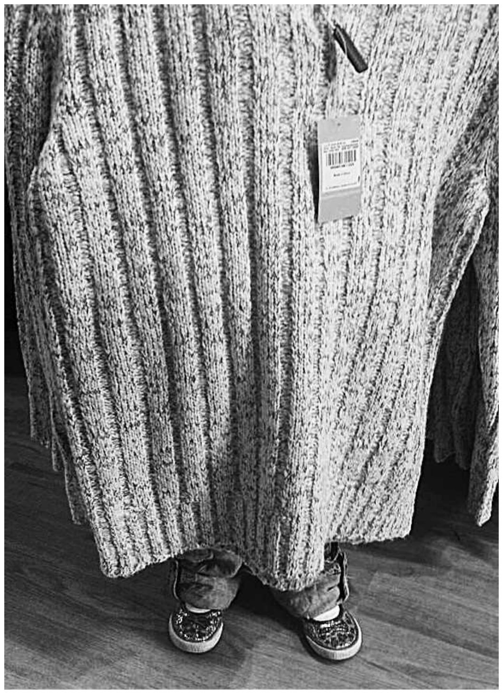
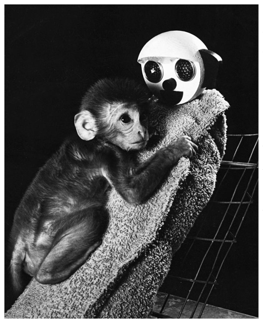
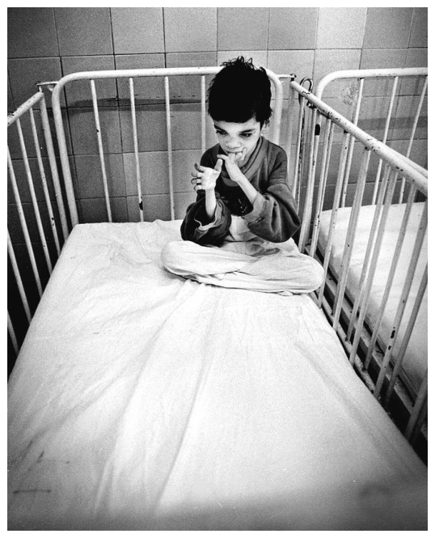
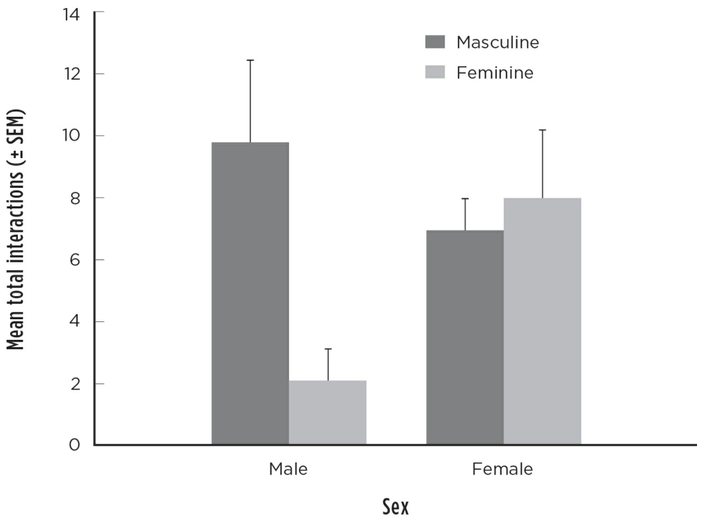

Chương 7 — Trở về chiếc nôi, trở về bụng mẹ
Bảy
Trở Về Chiếc Nôi, Trở Về
Tử Cung
S
au chuyến du hành tới Hành tinh Tuổi vị thành niên, chúng ta quay lại với cách tiếp cận cơ bản của mình. Hành vi của chúng ta—tốt, xấu, hoặc mơ hồ—đã xảy ra. Tại sao? Khi tìm kiếm gốc rễ của hành vi, rất lâu trước khi nghĩ đến nơ-ron hay hormone, chúng ta thường nhìn vào thời thơ ấu trước tiên.
SỰ PHỨC TẠP HÓA
T
hời thơ ấu rõ ràng là câu chuyện của sự gia tăng tính phức tạp trong mọi lĩnh vực hành vi, tư duy và cảm xúc. Điều cốt yếu là sự gia tăng tính phức tạp như vậy thường xuất hiện theo những chuỗi giai đoạn rập khuôn, phổ quát. Hầu hết các nghiên cứu về phát triển hành vi trẻ em đều ngầm định hướng theo giai đoạn, quan tâm đến: (a) trình tự xuất hiện của các giai đoạn; (b) trải nghiệm ảnh hưởng như thế nào đến tốc độ và độ chắc chắn khi cuộn băng tuần tự của sự trưởng thành đó chạy ra; và (c) điều này góp phần tạo nên con người trưởng thành sau này của đứa trẻ như thế nào. Chúng ta bắt đầu bằng việc xem xét sinh học thần kinh của bản chất “theo giai đoạn” trong sự phát triển.
CHUYẾN THAM QUAN NGẮN VỀ SỰ PHÁT TRIỂN NÃO BỘ
C
ác giai đoạn phát triển não bộ con người đều rất hợp lý. Vài tuần sau khi thụ thai, một làn sóng nơ-ron được sinh ra và di cư đến đúng vị trí của chúng. Vào khoảng tuần thứ hai mươi, có một đợt bùng nổ hình thành khớp thần kinh—các nơ-ron bắt đầu trò chuyện với nhau. Và sau đó các sợi trục bắt đầu được bọc trong myelin, lớp cách điện của tế bào thần kinh đệm (tạo thành “chất trắng”) giúp tăng tốc độ truyền tín hiệu.
Sự hình thành nơ-ron, di cư và tạo khớp thần kinh chủ yếu diễn ra trước khi sinh ở người.1 Ngược lại, có rất ít myelin lúc mới sinh, đặc biệt là ở các vùng não mới hơn về mặt tiến hóa; như chúng ta đã thấy, quá trình myelin hóa kéo dài suốt một phần tư thế kỷ. Các giai đoạn myelin hóa và sự phát triển chức năng hệ quả diễn ra rất rập khuôn. Ví dụ, vùng vỏ não giữ vai trò trung tâm trong việc hiểu ngôn ngữ được myelin hóa sớm hơn vài tháng so với vùng sản xuất ngôn ngữ—trẻ em hiểu ngôn ngữ trước khi nói được.
Quá trình myelin hóa có hệ quả lớn nhất khi bao bọc những sợi trục dài nhất, ở những nơ-ron giao tiếp qua khoảng cách xa nhất. Do đó, myelin hóa đặc biệt tạo điều kiện cho các vùng não trò chuyện với nhau. Không có vùng não nào là một hòn đảo biệt lập, và việc hình thành các mạch kết nối những vùng não ở xa nhau là tối quan trọng—nếu không thì làm sao vỏ não trán có thể dùng vài nơ-ron đã được myelin hóa của mình để nói chuyện với các nơ-ron ở tầng hầm của não bộ nhằm giúp bạn biết đi vệ sinh đúng chỗ?2
Như chúng ta đã thấy, bào thai động vật có vú sản xuất dư thừa nơ-ron và khớp thần kinh; những khớp thần kinh và nơ-ron kém hiệu quả hoặc không thiết yếu sẽ bị cắt tỉa, tạo ra các mạch thần kinh tinh gọn, sắc bén và hiệu quả hơn. Để nhắc lại một chủ đề từ chương trước, một vùng não trưởng thành càng muộn thì càng ít bị định hình bởi gen và càng chịu ảnh hưởng nhiều hơn bởi môi trường.3
CÁC GIAI ĐOẠN
N
hững giai đoạn phát triển nào của trẻ em giúp giải thích hành vi tốt/xấu/lưng chừng ở người trưởng thành đã khởi đầu câu chuyện ở chương 1? Bà tổ của mọi lý thuyết giai đoạn phát triển được đưa ra vào năm 1923, tiên phong bởi những thí nghiệm thông minh, thanh lịch của Jean Piaget hé lộ bốn giai đoạn phát triển nhận thức:4
Giai đoạn cảm giác – vận động (từ khi sinh đến ~24 tháng). Tư duy chỉ xoay quanh những gì đứa trẻ có thể trực tiếp cảm nhận và khám phá. Trong giai đoạn này, thường vào khoảng 8 tháng tuổi, trẻ phát triển “tính hằng định của đối tượng” (object permanence), hiểu rằng ngay cả khi không nhìn thấy một vật, nó vẫn tồn tại—đứa trẻ có thể tạo ra một hình ảnh tinh thần về thứ không còn ở đó nữa.* Giai đoạn tiền thao tác (~2 đến 7 tuổi). Đứa trẻ có thể duy trì các ý tưởng về cách thế giới vận hành mà không cần những ví dụ cụ thể trước mặt. Tư duy ngày càng mang tính biểu tượng; trò chơi tưởng tượng nở rộ. Tuy nhiên, lập luận mang tính trực giác—không có logic, không có nhân quả. Đây là lúc trẻ chưa thể chứng minh “sự bảo toàn thể tích”. Hai cốc thủy tinh giống hệt nhau A và B được đổ đầy lượng nước bằng nhau. Đổ nước từ cốc B sang cốc C, vốn cao và hẹp hơn. Hỏi đứa trẻ: “Cốc nào có nhiều nước hơn, A hay C?” Trẻ ở giai đoạn tiền thao tác dùng trực giác dân gian sai lầm—mực nước ở C cao hơn ở A; vậy nó hẳn phải chứa nhiều nước hơn. Giai đoạn thao tác cụ thể (7 đến 12 tuổi). Trẻ suy nghĩ logic hơn, không còn mắc bẫy trò cốc nước hình dạng khác nhau ngớ ngẩn kia nữa. Tuy nhiên, việc khái quát hóa logic từ các trường hợp cụ thể vẫn còn bấp bênh. Tư duy trừu tượng cũng vậy—ví dụ, tục ngữ được hiểu theo nghĩa đen (“‘Ngưu tầm ngưu, mã tầm mã’ nghĩa là những con trâu giống nhau thì tụ tập thành bầy”).
Giai đoạn thao tác chính thức (từ tuổi vị thành niên trở đi). Tiệm cận trình độ trừu tượng, lập luận và siêu nhận thức của người lớn.

Đứa trẻ chơi trốn tìm khi đang ở giai đoạn “Nếu con không nhìn thấy bố mẹ (hoặc thậm chí nếu con không nhìn thấy bố mẹ dễ dàng như bình thường), thì bố mẹ cũng không nhìn thấy con.”
Các khía cạnh khác của sự phát triển nhận thức cũng được khái niệm hóa theo từng giai đoạn. Một giai đoạn sớm xảy ra khi trẻ tập đi hình thành ranh giới bản ngã—“Có một ‘cái tôi’, tách biệt với mọi người khác.” Việc thiếu ranh giới bản ngã thể hiện khi một đứa trẻ tập đi chưa phân định rạch ròi nơi mình kết thúc và Mẹ bắt đầu—mẹ bị đứt tay, và đứa trẻ kêu ngón tay mình bị đau.5
Tiếp theo là giai đoạn nhận ra rằng những cá nhân khác có thông tin khác với bạn. Trẻ chín tháng tuổi biết nhìn theo hướng ai đó chỉ tay (cũng như các loài vượn khác và chó), biết rằng người chỉ tay có thông tin mà chúng không có. Điều này được thúc đẩy bởi động lực: Đồ chơi kia ở đâu? Cô ấy đang nhìn đâu thế? Trẻ lớn hơn hiểu một cách rộng hơn rằng người khác có suy nghĩ, niềm tin và kiến thức khác với mình, cột mốc đạt được Lý thuyết Tâm trí (Theory of Mind – ToM).6
Đây là hình ảnh của việc chưa có ToM. Một đứa trẻ hai tuổi và một người lớn nhìn thấy một chiếc bánh quy được đặt vào hộp A. Người lớn rời đi, và nhà nghiên cứu chuyển chiếc bánh sang hộp B. Hỏi đứa trẻ: “Khi người đó quay lại, chú ấy sẽ tìm chiếc bánh ở đâu?” Hộp B—đứa trẻ biết nó ở đó và do đó mọi người đều biết. Khoảng ba hoặc bốn tuổi, đứa trẻ có thể lập luận: “Chú ấy sẽ nghĩ nó ở trong hộp A, mặc dù con biết nó ở trong hộp B.” Úm ba la: ToM.
Việc vượt qua những bài kiểm tra “niềm tin sai lầm” như vậy là một cột mốc phát triển lớn. ToM sau đó tiến triển lên những khả năng thấu hiểu cao siêu hơn—ví dụ, nắm bắt sự mỉa mai, đặt mình vào góc nhìn của người khác, hoặc ToM bậc hai (hiểu được ToM của người A về người B).7
Nhiều vùng vỏ não khác nhau điều phối ToM: các phần của PFC giữa (không ngạc nhiên chút nào!) và một số nhân vật mới, bao gồm hồi chêm trước (precuneus), rãnh thái dương trên (superior temporal sulcus), và vùng nối thái dương – đỉnh (temporoparietal junction – TPJ). Điều này được chứng minh qua chụp ảnh thần kinh; qua sự suy giảm ToM nếu các vùng này bị tổn thương (người tự kỷ, vốn có ToM hạn chế, bị giảm chất xám và hoạt động ở rãnh thái dương trên); và qua thực tế là nếu bạn tạm thời làm bất hoạt TPJ, mọi người sẽ không xem xét ý định của ai đó khi phán xét đạo đức họ.8
Như vậy, có các giai đoạn nhìn theo hướng ánh mắt, tiếp theo là ToM bậc một, rồi ToM bậc hai, rồi đặt mình vào góc nhìn người khác, với tốc độ chuyển tiếp chịu ảnh hưởng bởi trải nghiệm (ví dụ: trẻ có anh chị lớn đạt được ToM sớm hơn mức trung bình).9
Tất nhiên, có những lời chỉ trích đối với cách tiếp cận theo giai đoạn trong phát triển nhận thức. Một lời chỉ trích nằm ngay tại trọng tâm của cuốn sách này: khung lý thuyết của Piaget nằm gọn trong một chiếc xô “nhận thức”, phớt lờ tác động của các yếu tố xã hội và cảm xúc.
Một ví dụ sẽ được thảo luận ở chương 12 liên quan đến trẻ sơ sinh chưa biết nói, vốn chắc chắn chưa hiểu được tính bắc cầu (nếu A > B, và B > C, thì A > C). Hãy cho xem một sự vi phạm tính bắc cầu trong tương tác giữa các hình khối trên màn hình (hình A lẽ ra phải húc đổ hình C, nhưng điều ngược lại xảy ra), và đứa trẻ chẳng bận tâm, không nhìn lâu. Nhưng hãy nhân hóa các hình khối đó bằng mắt và miệng, và lúc này nhịp tim tăng lên, đứa trẻ nhìn lâu hơn—“Ồ, nhân vật C lẽ ra phải tránh đường cho nhân vật A chứ, không phải ngược lại.” Con người hiểu các phép toán logic giữa các cá nhân sớm hơn là giữa các đồ vật.10
Trạng thái xã hội và động lực cũng có thể làm dịch chuyển giai đoạn nhận thức. Những manh mối sơ khai của ToM dễ chứng minh hơn ở những con tinh tinh đang tương tác với một con tinh tinh khác (so với với con người) và nếu có thứ gì đó tạo động lực—thức ăn—tham gia vào.*11
Cảm xúc và tình cảm có thể làm thay đổi giai đoạn nhận thức theo những cách cục bộ đến kinh ngạc. Tôi đã chứng kiến một ví dụ tuyệt vời về điều này khi con gái tôi bộc lộ cả ToM lẫn sự thất bại của ToM trong cùng một hơi thở. Con bé vừa chuyển trường mẫu giáo và đang quay lại thăm lớp cũ. Con bé kể cho mọi người nghe về cuộc sống ở trường mới: “Rồi, sau bữa trưa, tụi con chơi xích đu. Ở trường mới của con có xích đu đấy. Và rồi, sau đó, tụi con vào trong nhà và cô Carolee đọc truyện cho tụi con nghe. Rồi, sau đó...” Có ToM: “chơi xích đu”—khoan đã, các bạn không biết trường mình có xích đu; mình cần phải nói cho họ biết. Thất bại của ToM: “cô Carolee đọc truyện cho tụi con nghe.” Carolee là cô giáo ở trường mới của con bé. Cùng một logic đáng lẽ phải áp dụng—nói cho họ biết cô Carolee là ai. Nhưng vì Carolee là cô giáo tuyệt vời nhất trên đời, ToM đã thất bại. Sau đó tôi hỏi con bé: “Này, sao con không nói cho mọi người biết Carolee là cô giáo của con?” “Ôi, ai mà chẳng biết cô Carolee.” Làm sao có chuyện ai đó không biết được cơ chứ?
Cảm Nhận Nỗi Đau của Người Khác
ToM dẫn đến một bước tiếp theo—người khác có thể có những cảm xúc khác với tôi, bao gồm cả những cảm xúc đau đớn.12 Nhận thức này chưa đủ để tạo nên sự thấu cảm. Suy cho cùng, những kẻ thái nhân cách (sociopath), vốn thiếu thốn thấu cảm một cách bệnh lý, lại sử dụng ToM siêu đẳng để đi trước mọi người ba bước đầy thao túng và không chút hối hận. Nhận thức này cũng không hẳn là điều kiện cần thiết cho sự thấu cảm, vì trẻ quá nhỏ để có ToM vẫn thể hiện những dấu hiệu sơ khai của việc cảm nhận nỗi đau người khác—một đứa trẻ tập đi sẽ cố gắng an ủi ai đó giả vờ khóc, đưa cho họ núm vú giả của mình (và sự thấu cảm đó còn sơ khai ở chỗ đứa trẻ không thể hình dung ai đó được an ủi bằng những thứ khác với mình).
Đúng vậy, rất sơ khai. Có thể đứa trẻ tập đi cảm thấy sự thấu cảm sâu sắc. Hoặc có thể nó chỉ cảm thấy khó chịu vì tiếng khóc và đang cố làm người lớn im lặng vì lợi ích của chính mình. Năng lực thấu cảm thời thơ ấu tiến triển từ việc cảm nhận nỗi đau của ai đó vì bạn chính là họ, đến việc cảm thương cho người khác, rồi đến việc cảm nhận như thể mình là họ.
Sinh học thần kinh về sự thấu cảm ở trẻ em rất hợp lý. Như đã giới thiệu ở chương 2, ở người lớn, vỏ não đai trước (anterior cingulate cortex) kích hoạt khi họ thấy ai đó bị thương. Điều tương tự cũng xảy ra với hạch hạnh nhân và vỏ não đảo, đặc biệt trong các trường hợp tổn hại cố ý—có sự tức giận và ghê tởm. Các vùng PFC bao gồm vùng vmPFC (cảm xúc) cũng tham gia. Quan sát nỗi đau thể xác (ví dụ: một ngón tay bị kim châm) tạo ra một mô hình gián tiếp cụ thể: có sự kích hoạt chất xám quanh cống (PAG), vùng trung tâm cho cảm nhận nỗi đau của chính bạn, ở các phần vỏ não cảm giác tiếp nhận cảm giác từ ngón tay của chính bạn, và ở các nơ-ron vận động ra lệnh cho ngón tay của chính bạn cử động.* Bạn co rúm các ngón tay lại.
Công trình của Jean Decety thuộc Đại học Chicago cho thấy khi trẻ bảy tuổi nhìn thấy ai đó bị đau, sự kích hoạt mạnh nhất nằm ở các vùng cụ thể hơn—PAG và vỏ não cảm giác cùng vận động—với hoạt động của PAG gắn kết với mức kích hoạt vmPFC tối thiểu hiện có. Ở trẻ lớn hơn, vmPFC gắn kết với các cấu trúc hệ limbic đang ngày càng được kích hoạt mạnh mẽ hơn.13 Và đến tuổi vị thành niên, sự kích hoạt vmPFC mạnh mẽ hơn sẽ gắn kết với các vùng ToM. Điều gì đang xảy ra? Sự thấu cảm đang chuyển dịch từ thế giới cụ thể của “Ngón tay cô ấy chắc đau lắm, tự dưng mình thấy nhói ở ngón tay mình” sang sự tập trung kiểu ToM vào cảm xúc và trải nghiệm của người bị châm kim.
Sự thấu cảm của trẻ nhỏ không phân biệt giữa tổn hại cố ý và vô ý, hoặc giữa tổn hại đối với một người và đối với một đồ vật. Những sự phân biệt đó xuất hiện theo tuổi tác, vào khoảng thời gian phần PAG trong phản ứng thấu cảm giảm đi và có sự tham gia nhiều hơn của vmPFC cùng các vùng ToM; hơn nữa, tổn hại cố ý lúc này kích hoạt hạch hạnh nhân và vỏ não đảo—sự tức giận và ghê tởm đối với thủ phạm.* Đây cũng là lúc trẻ lần đầu tiên phân biệt được giữa nỗi đau do bản thân tự gây ra và nỗi đau do người khác gây ra.
Tinh tế hơn nữa—vào khoảng bảy tuổi, trẻ bắt đầu bộc lộ sự thấu cảm của mình. Đến mười đến mười hai tuổi, sự thấu cảm trở nên khái quát và trừu tượng hơn—thấu cảm cho “người nghèo”, thay vì một cá nhân cụ thể (mặt trái: đây cũng là lúc trẻ lần đầu tiên rập khuôn tiêu cực về các nhóm người).
Cũng có những manh mối của ý thức về công lý. Trẻ mẫu giáo có xu hướng theo chủ nghĩa bình quân (ví dụ: tốt hơn là bạn mình cũng được một chiếc bánh quy khi mình được). Nhưng trước khi chúng ta quá say sưa với sự hào phóng của tuổi thơ, thì thiên vị nhóm nội bộ (ingroup bias) đã xuất hiện rồi; nếu đứa trẻ kia là người lạ, chủ nghĩa bình quân sẽ giảm đi.14
Cũng có xu hướng ngày càng tăng ở trẻ em trong việc phản ứng với một sự bất công, khi ai đó bị đối xử thiếu công bằng.15 Nhưng một lần nữa, trước khi quá phấn khích, điều đó đi kèm với một sự thiên vị. Vào khoảng bốn đến sáu tuổi, trẻ em ở các nền văn hóa trên khắp thế giới phản ứng tiêu cực khi chính mình là người bị chia phần thiệt. Phải đến tám đến mười tuổi, trẻ mới phản ứng tiêu cực khi thấy người khác bị đối xử bất công. Hơn nữa, có sự biến thiên đáng kể giữa các nền văn hóa về việc liệu giai đoạn sau đó có thực sự xuất hiện hay không. Ý thức công lý ở trẻ nhỏ mang nặng tính tư lợi.
Ngay sau khi trẻ bắt đầu phản ứng tiêu cực trước việc người khác bị đối xử bất công, chúng bắt đầu cố gắng khắc phục những bất bình đẳng trước đó (“Bây giờ bạn ấy nên được nhiều hơn vì trước đó bạn ấy được ít hơn”).16 Đến tiền vị thành niên, chủ nghĩa bình quân nhường chỗ cho việc chấp nhận sự bất bình đẳng dựa trên công trạng, nỗ lực hoặc vì lợi ích chung lớn hơn (“Bạn ấy nên được chơi nhiều hơn cậu ấy; bạn ấy giỏi hơn/chăm chỉ hơn/quan trọng hơn cho đội”). Một số trẻ thậm chí làm được việc hy sinh bản thân vì lợi ích chung (“Bạn ấy nên được chơi nhiều hơn mình; bạn ấy giỏi hơn”).* Đến tuổi vị thành niên, các bé trai có xu hướng chấp nhận sự bất bình đẳng nhiều hơn các bé gái, dựa trên cơ sở vị lợi. Và cả hai giới đều chấp nhận sự bất bình đẳng như một quy ước xã hội—“Chẳng làm được gì đâu; đời nó thế rồi.”
Sự Phát Triển Đạo Đức
Với ToM, khả năng đặt mình vào góc nhìn của người khác, sự thấu cảm tinh tế và ý thức công lý đã vào vị trí, một đứa trẻ có thể bắt đầu vật lộn với việc phân biệt đúng sai.
Piaget nhấn mạnh rằng trò chơi của trẻ em phần lớn là để tìm ra các quy tắc ứng xử phù hợp (những quy tắc có thể khác với quy tắc của người lớn)* và điều này liên quan đến các giai đoạn có độ phức tạp tăng dần. Điều này đã truyền cảm hứng cho một nhà tâm lý học trẻ hơn nghiên cứu chủ đề này một cách chặt chẽ hơn, với những hệ quả có sức ảnh hưởng to lớn.
Vào những năm 1950, Lawrence Kohlberg, khi đó là nghiên cứu sinh tại Đại học Chicago và sau này là giáo sư tại Harvard, bắt đầu xây dựng các giai đoạn phát triển đạo đức lừng danh của mình.17
Trẻ em được đưa ra các tình huống tiến thoái lưỡng nan về đạo đức. Ví dụ: Liều thuốc duy nhất của loại thuốc duy nhất có thể cứu một người phụ nữ nghèo khỏi cái chết lại đắt đỏ một cách phi lý. Cô ấy có nên ăn cắp nó không? Tại sao?
Kohlberg kết luận rằng phán đoán đạo đức là một quá trình nhận thức, được xây dựng xoay quanh lập luận ngày càng phức tạp khi trẻ trưởng thành. Ông đề xuất ba cấp độ phát triển đạo đức nổi tiếng, mỗi cấp độ gồm hai giai đoạn nhỏ.
Bạn được dặn không được ăn chiếc bánh quy hấp dẫn trước mặt. Bạn có nên ăn nó không? Dưới đây là các giai đoạn lập luận được đơn giản hóa đến đau lòng dẫn đến quyết định đó:
Cấp độ 1: Tôi Có Nên Ăn Chiếc Bánh Quy Không? Lập Luận Tiền Quy Ước
Giai đoạn 1. Tùy xem. Khả năng tôi bị phạt là bao nhiêu? Bị phạt rất khó chịu. Sự hung hăng thường đạt đỉnh vào khoảng hai đến bốn tuổi, sau đó trẻ bị kiềm chế bởi hình phạt của người lớn (“Ra góc tường ngồi ngay”) và bạn bè (tức là bị tẩy chay).
Giai đoạn 2. Tùy xem. Nếu tôi nhịn ăn, tôi có được thưởng không? Được thưởng rất thích.
Cả hai giai đoạn đều hướng về bản ngã—sự vâng lời và tư lợi (tôi được lợi gì trong chuyện này?). Kohlberg nhận thấy trẻ em thường ở cấp độ này cho đến khoảng tám đến mười tuổi.
Mối lo ngại nảy sinh khi sự hung hăng, đặc biệt nếu nhẫn tâm và không hối hận, không thuyên giảm vào khoảng độ tuổi này—điều này dự báo nguy cơ gia tăng chứng thái nhân cách ở tuổi trưởng thành (còn gọi là nhân cách chống đối xã hội).* Điều cốt yếu là hành vi của những kẻ thái nhân cách tương lai dường như miễn nhiễm với phản hồi tiêu cực. Như đã lưu ý, ngưỡng chịu đau cao ở những kẻ thái nhân cách giúp giải thích sự thiếu thấu cảm của họ—thật khó cảm nhận nỗi đau của người khác khi bạn không thể cảm nhận nỗi đau của chính mình. Nó cũng giúp giải thích sự miễn nhiễm với phản hồi tiêu cực—tại sao phải thay đổi hành vi nếu hình phạt chẳng có tác dụng gì?
Cũng vào khoảng giai đoạn này, trẻ lần đầu tiên biết hòa giải sau xung đột và tìm thấy sự an ủi từ việc hòa giải (ví dụ: giảm tiết glucocorticoid và giảm lo âu). Những lợi ích đó chắc chắn cho thấy tư lợi thúc đẩy sự hòa giải. Điều này được thể hiện theo một cách thực dụng khác—trẻ hòa giải dễ dàng hơn khi mối quan hệ đó quan trọng với chúng.
Cấp độ 2: Tôi Có Nên Ăn Chiếc Bánh Quy Không? Lập Luận Quy Ước
Giai đoạn 3. Tùy xem. Ai sẽ bị mất phần nếu tôi ăn? Tôi có thích họ không? Người khác sẽ làm gì? Mọi người sẽ nghĩ gì về tôi khi ăn chiếc bánh quy? Nghĩ cho người khác thì tốt; được mọi người quý mến thì tốt.
Giai đoạn 4. Tùy xem. Luật lệ là gì? Luật lệ có bất khả xâm phạm không? Điều gì xảy ra nếu ai cũng phạm luật này? Có trật tự thì tốt. Đây là vị thẩm phán khi xem xét các hoạt động cho vay cắt cổ nhưng hợp pháp của một ngân hàng đã nghĩ: “Tôi thấy thương cho những nạn nhân này . . . nhưng tôi ở đây để quyết định xem ngân hàng có phạm luật hay không . . . và họ đã không phạm luật.”
Lập luận đạo đức quy ước mang tính quan hệ (về tương tác của bạn với người khác và hệ quả của chúng); hầu hết thanh thiếu niên và người lớn đều ở cấp độ này.
Cấp độ 3: Tôi Có Nên Ăn Chiếc Bánh Quy Không? Lập Luận Hậu Quy Ước
Giai đoạn 5: Tùy xem. Hoàn cảnh nào đã đặt chiếc bánh quy ở đó? Ai quyết định tôi không được lấy nó? Tôi có cứu được một mạng người bằng cách lấy chiếc bánh quy không? Thật tốt khi các quy tắc rõ ràng được áp dụng một cách linh hoạt. Lúc này vị thẩm phán sẽ nghĩ: “Đúng, hành động của ngân hàng là hợp pháp, nhưng rốt cuộc luật pháp tồn tại để bảo vệ kẻ yếu trước kẻ mạnh, vì vậy dù có hợp đồng ký kết hay không, ngân hàng đó phải bị chặn lại.”
Giai đoạn 6: Tùy xem. Lập trường đạo đức của tôi về việc này có thiết yếu hơn một điều luật nào đó không, một lập trường mà tôi sẵn sàng trả giá đắt nhất nếu cần? Thật tốt khi biết có những điều mà vì nó tôi sẵn sàng hát vang mãi: “Chúng Ta Sẽ Không Lay Chuyển.”
Cấp độ này mang tính vị ngã ở chỗ các quy tắc và việc áp dụng chúng xuất phát từ bên trong và phản ánh lương tâm, nơi một sự vi phạm đòi hỏi cái giá tối thượng—phải sống chung với chính mình sau đó. Nó nhận ra rằng làm người tốt và tuân thủ pháp luật không đồng nghĩa với nhau. Như Woody Guthrie đã viết trong “Pretty Boy Floyd”: “Tôi yêu một người tốt đứng ngoài vòng pháp luật, cũng nhiều như tôi ghét một kẻ xấu núp bóng pháp luật.”*
Giai đoạn 6 cũng mang tính tự phụ, ngầm xây dựng trên sự tự cho mình là đúng vượt lên trên những kẻ làm luật tiểu tư sản nhỏ mọn và những kẻ đếm đậu, Giới Cầm Quyền, bọn cừu chỉ biết làm theo, v.v. Trích lời Emerson, như người ta thường làm khi xem xét giai đoạn hậu quy ước: “Mỗi hành động anh hùng tự đo lường chính mình bằng sự khinh miệt đối với một lợi ích bên ngoài nào đó.” Lập luận giai đoạn 6 có thể truyền cảm hứng. Nhưng nó cũng có thể gây khó chịu, đặt trên tiền đề coi “làm người tốt” và “tuân thủ pháp luật” là hai thái cực đối lập. “Để sống ngoài vòng pháp luật, bạn phải trung thực,” Bob Dylan viết.
Các nhà nghiên cứu theo trường phái Kohlberg nhận thấy hầu như chẳng có ai duy trì ổn định ở giai đoạn 5 hay giai đoạn 6.
— Về cơ bản, Kohlberg đã phát minh ra ngành nghiên cứu khoa học về sự phát triển đạo đức ở trẻ em. Mô hình giai đoạn của ông kinh điển đến mức người trong nghề hạ bệ ai đó bằng cách ám chỉ họ bị kẹt lại trong vũng bùn nguyên thủy của một giai đoạn Kohlberg sơ khai. Như chúng ta sẽ thấy ở chương 12, thậm chí có bằng chứng cho thấy người bảo thủ và người tự do lập luận ở các giai đoạn Kohlberg khác nhau.
Tất nhiên, công trình của Kohlberg cũng có những vấn đề.
Chuyện thường tình: Đừng quá nghiêm trọng hóa bất kỳ mô hình giai đoạn nào—luôn có ngoại lệ, sự chuyển tiếp trưởng thành không rạch ròi, và giai đoạn của một người có thể phụ thuộc vào bối cảnh.
Vấn đề tầm nhìn hạn hẹp và đặt sai trọng tâm: Ban đầu Kohlberg nghiên cứu nhóm người thiếu tính đại diện quen thuộc, tức người Mỹ, và như chúng ta sẽ thấy ở các chương sau, phán đoán đạo đức khác nhau giữa các nền văn hóa. Hơn nữa, đối tượng nghiên cứu là nam giới, điều bị Carol Gilligan của Đại học NYU thách thức vào những năm 1980. Hai người đồng ý về trình tự chung của các giai đoạn. Tuy nhiên, Gilligan và cộng sự chỉ ra rằng khi đưa ra phán đoán đạo đức, các bé gái và phụ nữ thường coi trọng sự quan tâm chăm sóc (care) hơn công lý, trái ngược với các bé trai và nam giới. Kết quả là nữ giới nghiêng về tư duy quy ước với trọng tâm là các mối quan hệ, trong khi nam giới nghiêng về những trừu tượng hậu quy ước.18
Sự nhấn mạnh vào nhận thức: Phán đoán đạo đức là kết quả của lập luận nhiều hơn hay của trực giác và cảm xúc nhiều hơn? Trường phái Kohlberg thiên về vế đầu. Nhưng như sẽ thấy ở chương 13, rất nhiều sinh vật có kỹ năng nhận thức hạn chế, bao gồm trẻ nhỏ và các loài linh trưởng không phải người, vẫn thể hiện ý thức sơ khai về sự công bằng và công lý. Những phát hiện như vậy làm điểm tựa cho quan điểm “trực giác xã hội” về ra quyết định đạo đức, gắn liền với các nhà tâm lý học Martin Hoffman và Jonathan Haidt, cả hai đều thuộc Đại học NYU.19 Tự nhiên là câu hỏi đặt ra sẽ là lập luận đạo đức và trực giác đạo đức tương tác với nhau như thế nào. Như chúng ta sẽ thấy, (a) thay vì chỉ thuần túy là cảm xúc, trực giác đạo đức là một kiểu nhận thức khác với lập luận có ý thức; và (b) ngược lại, lập luận đạo đức thường phi logic một cách trắng trợn. Hãy đón xem.
Sự thiếu khả năng dự báo: Liệu những điều này có thực sự dự báo được ai sẽ làm điều khó khăn hơn khi đó là điều đúng đắn cần làm không? Liệu những người đoạt huy chương vàng về lập luận kiểu Kohlberg có phải là những người sẵn sàng trả giá để tố giác sai phạm, khống chế kẻ xả súng, che chở người tị nạn? Chà, quên chuyện anh hùng đi; liệu họ có thậm chí dễ trung thực hơn trong các thí nghiệm tâm lý vặt vãnh không? Nói cách khác, lập luận đạo đức có dự báo hành động đạo đức không? Hiếm khi; như chúng ta sẽ thấy ở chương 13, chủ nghĩa anh hùng đạo đức hiếm khi nảy sinh từ ý chí vỏ não trán siêu phàm. Thay vào đó, nó xảy ra khi điều đúng đắn không phải là điều khó khăn hơn.
Kẹo Dẻo Marshmallow
Vỏ não trán và sự kết nối ngày càng tăng của nó với phần còn lại của bộ não là mỏ neo cho sinh học thần kinh về sự tinh tế ngày càng lớn của trẻ em, quan trọng nhất là khả năng điều hòa cảm xúc và hành vi. Minh chứng mang tính biểu tượng nhất cho điều này xoay quanh một vật thể không ngờ tới—viên kẹo dẻo marshmallow.20
Vào những năm 1960, nhà tâm lý học Walter Mischel của Đại học Stanford đã phát triển “bài kiểm tra kẹo dẻo” để nghiên cứu khả năng trì hoãn sự thỏa mãn. Một đứa trẻ được đặt trước mặt một viên kẹo dẻo. Người làm thí nghiệm nói: “Chú/cô ra ngoài một lát. Cháu có thể ăn viên kẹo sau khi chú/cô đi. Nhưng nếu cháu đợi và không ăn cho đến khi chú/cô quay lại, chú/cô sẽ cho cháu thêm một viên nữa,” rồi rời đi. Và đứa trẻ, được quan sát qua gương một chiều, bắt đầu thử thách cô độc kéo dài mười lăm phút cho đến khi nhà nghiên cứu trở lại.
Nghiên cứu hàng trăm trẻ từ ba đến sáu tuổi, Mischel nhận thấy sự biến thiên khổng lồ—một vài em ăn viên kẹo trước cả khi người làm thí nghiệm bước ra khỏi phòng. Khoảng một phần ba trụ được đủ mười lăm phút. Số còn lại rải rác ở khoảng giữa, với thời gian trì hoãn trung bình là mười một phút. Chiến lược của trẻ để chống lại tiếng gọi ma mị của viên kẹo dẻo rất khác nhau, như có thể thấy trong các phiên bản hiện đại của bài kiểm tra trên YouTube. Một số em che mắt lại, giấu viên kẹo đi, hát để đánh lạc hướng bản thân. Số khác nhăn nhó, ngồi đè lên tay mình. Số khác nữa ngửi viên kẹo, ngắt một mẩu nhỏ xíu vô tận để ăn, nâng niu nó một cách thành kính, hôn nó, vuốt ve nó.
Nhiều yếu tố điều chỉnh sự kiên định của trẻ (được thể hiện trong các nghiên cứu sau đó mô tả trong sách của Mischel, nơi vì lý do nào đó mà bánh quy xoắn pretzel thay thế cho kẹo dẻo). Niềm tin vào hệ thống rất quan trọng—nếu trước đó người làm thí nghiệm từng thất hứa, trẻ sẽ không đợi lâu bằng. Gợi ý trẻ nghĩ về việc bánh quy xoắn giòn và ngon thế nào (cái mà Mischel gọi là “tư duy nóng”) đã thổi bay tính tự kỷ luật; gợi ý nghĩ về một “tư duy lạnh” (ví dụ: hình dáng của bánh quy xoắn) hoặc một tư duy nóng thay thế (ví dụ: kem) đã củng cố sức đề kháng.
Đúng như dự đoán, trẻ lớn hơn trụ được lâu hơn, sử dụng các chiến lược hiệu quả hơn. Trẻ nhỏ hơn mô tả những chiến lược như “Cháu cứ nghĩ mãi về việc viên kẹo thứ hai sẽ ngon đến mức nào.” Vấn đề, tất nhiên, là chiến lược này chỉ cách việc nghĩ về viên kẹo ngay trước mặt bạn khoảng hai khớp thần kinh mà thôi. Ngược lại, trẻ lớn hơn sử dụng các chiến lược đánh lạc hướng—nghĩ về đồ chơi, thú cưng, sinh nhật của mình. Điều này tiến triển thành các chiến lược tái đánh giá (“Đây không phải là chuyện kẹo dẻo. Đây là chuyện mình là kiểu người nào”). Với Mischel, sự trưởng thành của ý chí là câu chuyện về các chiến lược đánh lạc hướng và tái đánh giá nhiều hơn là chủ nghĩa khắc kỷ.
Vậy là trẻ em tiến bộ dần trong việc trì hoãn sự thỏa mãn. Bước tiếp theo của Mischel đã biến nghiên cứu của ông thành biểu tượng—ông theo dõi lũ trẻ sau đó, xem liệu thời gian chờ đợi kẹo dẻo có dự báo được điều gì về tuổi trưởng thành của chúng không.
Có chứ, quá đi chứ. Những nhà vô địch năm tuổi về sự kiên nhẫn với kẹo dẻo đạt điểm SAT trung bình cao hơn ở trường trung học (so với những em không thể đợi), có thành công xã hội và khả năng phục hồi tốt hơn, ít hành vi hung hăng* và chống đối hơn. Bốn mươi năm sau viên kẹo dẻo, họ xuất sắc về chức năng vùng trán, có mức kích hoạt PFC cao hơn trong một nhiệm vụ vùng trán, và có chỉ số BMI thấp hơn.21 Một chiếc máy quét não trị giá hàng tỷ đô la cũng không có sức mạnh dự báo hơn một viên kẹo dẻo. Mọi bậc cha mẹ trung lưu lo âu đều bị ám ảnh bởi những phát hiện này, đã biến kẹo dẻo thành vật thờ phụng.
HỆ QUẢ
C
húng ta vừa có cái nhìn sơ lược về các lĩnh vực phát triển hành vi khác nhau. Đã đến lúc đặt mọi thứ vào câu hỏi trung tâm của cuốn sách này. Người trưởng thành của chúng ta đã thực hiện hành vi tuyệt vời, tồi tệ hoặc mơ hồ đó. Những sự kiện thời thơ ấu nào đã góp phần dẫn đến việc đó xảy ra?
Thử thách đầu tiên là thực sự đưa sinh học vào trong tư duy của chúng ta. Một đứa trẻ bị suy dinh dưỡng và khi trưởng thành có kỹ năng nhận thức kém. Điều đó thật dễ định khung về mặt sinh học—suy dinh dưỡng làm suy yếu sự phát triển não bộ. Ngược lại, một đứa trẻ được nuôi dạy bởi cha mẹ lạnh lùng, thiếu biểu cảm và khi trưởng thành cảm thấy mình không đáng được yêu. Khó hơn nhiều để liên kết hai điều đó về mặt sinh học, để cưỡng lại suy nghĩ rằng bằng cách nào đó đây là một hiện tượng ít mang tính sinh học hơn mối liên hệ suy dinh dưỡng/nhận thức. Có thể người ta biết ít hơn về những thay đổi sinh học giải thích mối liên hệ giữa cha mẹ lạnh lùng và người trưởng thành có lòng tự trọng thấp so với mối liên hệ suy dinh dưỡng/nhận thức. Có thể việc diễn đạt vế đầu tiên về mặt sinh học kém thuận tiện hơn vế sau. Có thể việc áp dụng một liệu pháp sinh học trực tiếp cho vế đầu tiên khó hơn vế sau (ví dụ: một loại thuốc yếu tố tăng trưởng thần kinh tưởng tượng giúp cải thiện lòng tự trọng so với nhận thức). Nhưng sinh học đều làm trung gian cho cả hai mối liên hệ. Một đám mây có thể ít hữu hình hơn một viên gạch, nhưng nó được cấu tạo từ cùng những quy luật về cách các nguyên tử tương tác.
Sinh học liên kết thời thơ ấu với các hành vi tuổi trưởng thành như thế nào? Tính dẻo thần kinh của chương 5 được viết hoa và từ rất sớm. Bộ não đang phát triển là hiện thân hoàn hảo của tính dẻo thần kinh, và mọi nấc cụt của trải nghiệm đều có tác động, dù thường là rất nhỏ, lên bộ não đó.
Bây giờ chúng ta xem xét những cách thức mà các kiểu tuổi thơ khác nhau tạo ra những kiểu người trưởng thành khác nhau.
HÃY BẮT ĐẦU TỪ ĐIỂM KHỞI ĐẦU: TẦM QUAN TRỌNG CỦA NHỮNG NGƯỜI MẸ
K
hông có gì bằng một tiêu đề mục khẳng định điều hiển nhiên. Ai cũng cần một người mẹ. Ngay cả loài gặm nhấm; tách chuột con khỏi Mẹ vài giờ mỗi ngày và khi trưởng thành, chúng có nồng độ glucocorticoid tăng cao, kỹ năng nhận thức kém, lo âu, và nếu là con đực, hung hăng hơn.22 Người mẹ đóng vai trò tối quan trọng. Ngoại trừ việc mãi cho đến tận thế kỷ XX, hầu hết các chuyên gia lại không nghĩ như vậy. Phương Tây đã phát triển các kỹ thuật nuôi dạy con mà khi so với các nền văn hóa truyền thống, trẻ em có ít tiếp xúc thể chất với mẹ hơn, ngủ riêng ở độ tuổi sớm hơn, và có thời gian chờ đợi lâu hơn mới được bế lên khi khóc. Khoảng năm 1900, chuyên gia hàng đầu Luther Holt của Đại học Columbia đã cảnh báo chống lại “thói quen xấu xa” là bế một đứa trẻ đang khóc hoặc ẵm bồng nó quá thường xuyên. Đây là thế giới của những đứa trẻ nhà giàu, được vú em nuôi nấng và được đưa ra trình diện cha mẹ trước giờ đi ngủ để được nhìn thoáng qua nhưng không được cất tiếng.
Thời kỳ này đã mang lại một trong những cuộc tình một đêm kỳ lạ nhất lịch sử, đó là khi trường phái Freud và trường phái hành vi móc ngoặc với nhau để giải thích tại sao trẻ sơ sinh lại gắn bó với mẹ mình. Với các nhà hành vi học, hiển nhiên là vì người mẹ củng cố hành vi cho chúng, cung cấp calo khi chúng đói. Với các nhà phân tâm học Freud, cũng hiển nhiên không kém, trẻ sơ sinh thiếu “sự phát triển bản ngã” để hình thành mối quan hệ với bất kỳ thứ gì/ai khác ngoài bầu ngực của Mẹ. Khi kết hợp với chủ nghĩa trẻ em chỉ nên để nhìn chứ không nên để nghe tiếng, điều này gợi ý rằng một khi bạn đã giải quyết xong nhu cầu dinh dưỡng, nhiệt độ thích hợp, cộng thêm vài thứ lặt vặt khác của đứa trẻ, thì chúng đã ổn thỏa. Tình cảm, sự ấm áp, tiếp xúc thể chất? Thừa thãi.
Tư duy như vậy đã tạo ra ít nhất một thảm họa. Khi một đứa trẻ phải nhập viện một thời gian, giáo điều lúc bấy giờ là người mẹ không cần thiết—bà chỉ làm tăng thêm sự xáo trộn cảm xúc, còn mọi thứ thiết yếu đã do nhân viên bệnh viện cung cấp. Thông thường, các bà mẹ chỉ được thăm con mỗi tuần một lần trong vài phút. Và khi trẻ phải nằm viện dài ngày, chúng héo mòn đi vì “hội chứng bệnh viện” (hospitalism), chết hàng loạt vì các bệnh nhiễm trùng không đặc hiệu và rối loạn tiêu hóa chẳng liên quan gì đến căn bệnh ban đầu của chúng.23 Đây là thời đại mà thuyết vi trùng đã biến tướng thành niềm tin rằng trẻ em nằm viện phát triển tốt nhất khi không bị chạm vào, trong sự cách ly vô trùng. Đáng kinh ngạc là hội chứng bệnh viện tăng vọt ở những bệnh viện có lồng ấp đời mới (cải tiến từ ngành chăn nuôi gia cầm); những bệnh viện an toàn nhất lại là những bệnh viện nghèo nàn dựa vào hành động nguyên thủy là con người thực sự chạm vào và tương tác với trẻ sơ sinh.
Vào những năm 1950, bác sĩ tâm thần người Anh John Bowlby đã thách thức quan điểm coi trẻ sơ sinh là những sinh vật đơn giản với ít nhu cầu cảm xúc; “thuyết gắn bó” (attachment theory) của ông đã khai sinh ra quan điểm hiện đại của chúng ta về mối liên kết mẹ – con.*24 Trong bộ ba tác phẩm Attachment and Loss (Gắn bó và Mất mát), Bowlby đã tóm tắt những câu trả lời hiển nhiên mà ngày nay chúng ta sẽ đưa ra cho câu hỏi “Trẻ em cần gì từ mẹ của mình?”: tình yêu thương, sự ấm áp, âu yếm, sự đáp ứng, kích thích, nhất quán và đáng tin cậy. Điều gì được tạo ra khi thiếu vắng những thứ đó? Những người trưởng thành lo âu, trầm cảm, và/hoặc gắn bó kém.*
Bowlby đã truyền cảm hứng cho một trong những thí nghiệm mang tính biểu tượng nhất trong lịch sử tâm lý học, do Harry Harlow thuộc Đại học Wisconsin thực hiện; nó đã phá hủy giáo điều của trường phái Freud và hành vi về sự gắn bó mẹ – con.25 Harlow nuôi một con khỉ rhesus sơ sinh không có mẹ mà thay vào đó là hai “mẹ thay thế”. Cả hai đều làm bằng một ống lưới thép chuồng gà mô phỏng phần thân, với một chiếc đầu nhựa giống khỉ ở trên. Một mẹ thay thế có gắn bình sữa nhô ra từ “phần thân”. Mẹ kia có bọc vải lông mềm quanh thân. Nói cách khác, một mẹ cung cấp calo, mẹ kia mang lại một mô phỏng đầy xúc động về bộ lông của khỉ mẹ. Freud và B. F. Skinner hẳn đã phải vật lộn để tranh giành quyền tiếp cận bà mẹ lưới thép. Nhưng khỉ con đã chọn bà mẹ vải lông.* “Con người không thể chỉ sống bằng sữa. Tình yêu là một cảm xúc không cần phải được cho ăn bằng bình hay bằng thìa,” Harlow viết.
Bằng chứng cho nhu cầu cơ bản nhất do người mẹ mang lại đến từ một nguồn gây tranh cãi. Bắt đầu từ những năm 1990, tỷ lệ tội phạm lao dốc trên khắp nước Mỹ. Tại sao? Với phe tự do, câu trả lời là nền kinh tế thịnh vượng. Với phe bảo thủ, đó là ngân sách lớn hơn cho cảnh sát, mở rộng nhà tù và luật kết án ba lần phạm tội (three-strikes). Trong khi đó, một lời giải thích một phần được đưa ra bởi học giả pháp lý John Donohue của Stanford và nhà kinh tế học Steven Levitt của Đại học Chicago—đó là việc hợp pháp hóa phá thai. Phân tích theo từng bang của hai tác giả về việc tự do hóa luật phá thai và nhân khẩu học của sự sụt giảm tội phạm cho thấy khi việc phá thai trở nên dễ dàng

tiếp cận tại một khu vực, tỷ lệ tội phạm ở người trẻ tuổi giảm xuống khoảng hai mươi năm sau đó. Không ngạc nhiên—điều này gây tranh cãi dữ dội, nhưng với tôi nó hoàn toàn hợp lý một cách đáng buồn. Yếu tố nào dự báo mạnh mẽ một cuộc đời tội phạm? Được sinh ra bởi một người mẹ mà nếu có thể, bà ấy đã chọn không sinh bạn ra. Điều cơ bản nhất mà một người mẹ mang lại là gì? Biết rằng bà ấy hạnh phúc vì bạn tồn tại.*26
Harlow cũng giúp chứng minh một nền tảng của cuốn sách này, đó là những gì các bà mẹ (và sau này là bạn bè đồng trang lứa) cung cấp khi trẻ lớn lên. Để làm điều đó, ông đã thực hiện một số nghiên cứu gây phẫn nộ nhất trong lịch sử tâm lý học. Việc này liên quan đến việc nuôi khỉ con trong sự cô lập, không có mẹ hay bạn bè; chúng trải qua những tháng đầu tiên, thậm chí nhiều năm đầu đời mà không tiếp xúc với bất kỳ sinh vật sống nào khác, trước khi được đưa vào một nhóm xã hội.*
Đúng như dự đoán, chúng trở nên tàn tạ. Một số ngồi một mình, tự ôm lấy bản thân, đung đưa kiểu “tự kỷ”. Số khác có hành vi phân cấp hoặc tình dục cực kỳ bất thường.
Có một điều thú vị. Không phải những cá thể từng bị cô lập này thực hiện sai động tác hành vi—chúng không phô trương hung hăng như một con đà điểu, hay làm cử chỉ mời gọi tình dục của một con tắc kè. Các hành vi đều bình thường nhưng xảy ra sai thời điểm và sai chỗ—chẳng hạn, làm cử chỉ phục tùng trước những con nhãi nhép bé bằng nửa mình, hoặc đe dọa những con đầu đàn mà lẽ ra chúng phải co rúm lại trước mặt. Mẹ và bạn bè không dạy các đặc điểm vận động của các mô thức hành động cố định; những thứ đó đã được cài đặt sẵn. Họ dạy khi nào, ở đâu, và với ai—bối cảnh phù hợp cho những hành vi đó. Họ trao những bài học đầu tiên về việc khi nào thì chạm vào tay ai đó hay bóp cò súng có thể nằm trong số những hành vi tốt đẹp nhất hoặc tồi tệ nhất của chúng ta.
Tôi đã chứng kiến một ví dụ ấn tượng về điều này ở loài khỉ đầu chó mà tôi nghiên cứu tại Kenya, khi cả một con cái thứ hạng cao và một con cái thứ hạng thấp cùng sinh con gái trong cùng một tuần. Con của bà mẹ thứ hạng cao đạt mọi cột mốc phát triển sớm hơn con kia, sân chơi đã mất cân bằng ngay từ đầu. Khi hai con khỉ con được vài tuần tuổi, chúng suýt có cuộc tương tác đầu tiên. Con gái của bà mẹ cấp dưới nhìn thấy con gái của bà mẹ thống trị, chập chững bước tới chào hỏi. Và khi nó lại gần, bà mẹ thứ hạng thấp của nó đã túm lấy đuôi nó và kéo giật lại.
Đây là bài học đầu tiên của nó về vị trí của mình trong thế giới đó. “Con thấy nó không? Nó có thứ hạng cao hơn con nhiều lắm, nên con không thể cứ thế xông tới chơi với nó được. Nếu nó ở gần, con phải ngồi yên, tránh giao tiếp bằng mắt và hy vọng nó không cướp mất thứ con đang ăn.” Kinh ngạc thay, hai mươi năm sau, hai đứa trẻ sơ sinh đó sẽ trở thành hai bà lão, ngồi trên thảo nguyên, vẫn bộc lộ những bất đối xứng về thứ hạng mà chúng đã học được vào buổi sáng hôm ấy.
MỘT NGƯỜI MẸ NÀO ĐÓ TRONG CƠN BÃO
H
arlow đã mang lại một bài học quan trọng khác, nhờ một nghiên cứu khác đau lòng khi nghĩ tới. Khỉ con được nuôi với những mẹ thay thế bằng lưới thép có gắn vòi phun khí ở giữa thân. Khi khỉ con bám vào, nó sẽ bị một luồng khí khó chịu thổi thẳng vào người. Một nhà hành vi học sẽ dự đoán con khỉ làm gì khi đối mặt với hình phạt như vậy? Bỏ chạy. Nhưng, giống như trong thế giới của trẻ em bị bạo hành và bạn đời bị đánh đập, khỉ con lại bám chặt hơn.
Tại sao chúng ta thường trở nên gắn bó với một nguồn củng cố tiêu cực, tìm kiếm sự an ủi khi đau khổ từ chính nguyên nhân gây ra nỗi đau khổ đó? Tại sao chúng ta lại yêu nhầm người, bị ngược đãi, rồi vẫn quay lại để chịu đựng thêm?
Các kiến giải tâm lý học rất phong phú. Vì lòng tự trọng kém, tin rằng bạn sẽ chẳng bao giờ tìm được ai tốt hơn. Hoặc một niềm tin đồng phụ thuộc rằng sứ mệnh của bạn là thay đổi người đó. Có lẽ bạn đồng nhất hóa với kẻ áp bức mình, hoặc tự quyết định rằng đó là lỗi của bạn và kẻ bạo hành có lý do chính đáng, để họ trông bớt phi lý và đáng sợ hơn. Những điều này đều có cơ sở và có thể mang lại sức mạnh giải thích và trị liệu to lớn. Nhưng công trình của Regina Sullivan thuộc Đại học NYU chứng minh những mảnh ghép của hiện tượng này ở cách xa tâm lý con người hàng dặm.
Sullivan đã điều kiện hóa chuột con để liên kết một mùi hương trung tính với một cú sốc điện.27 Nếu một con chuột con được điều kiện hóa lúc mười ngày tuổi trở lên (“chuột con lớn hơn”) tiếp xúc với mùi đó, những điều hợp lý sẽ xảy ra—kích hoạt hạch hạnh nhân, tiết glucocorticoid và né tránh mùi hương. Nhưng làm điều tương tự với một con chuột con nhỏ hơn thì chẳng có gì trong số đó xảy ra; đáng kinh ngạc là con chuột con lại bị thu hút bởi mùi hương đó.
Tại sao? Có một điểm lắt léo thú vị liên quan đến stress ở trẻ sơ sinh. Bào thai gặm nhấm hoàn toàn có khả năng tiết glucocorticoid. Nhưng trong vòng vài giờ sau khi sinh, tuyến thượng thận teo lại đáng kể, gần như không thể tiết glucocorticoid. “Giai đoạn giảm đáp ứng với stress” (SHRP) này suy yếu dần trong những tuần tiếp theo.28
SHRP là gì? Glucocorticoid có quá nhiều tác động bất lợi lên sự phát triển của não bộ (hãy chờ xem) đến mức SHRP đại diện cho một canh bạc—“Con sẽ không tiết glucocorticoid để đáp ứng với stress, nhằm phát triển tối ưu; nếu có chuyện gì căng thẳng xảy ra, Mẹ sẽ lo liệu giúp con.” Tương ứng, hãy tách chuột con khỏi mẹ chúng, và trong vòng vài giờ tuyến thượng thận của chúng nở ra và lấy lại khả năng tiết dồi dào glucocorticoid.
Trong giai đoạn SHRP, chuột con dường như sử dụng một quy tắc bổ sung: “Nếu Mẹ ở quanh đây (và do đó con không tiết glucocorticoid), con nên gắn bó với bất kỳ kích thích mạnh nào. Nó không thể có hại cho con được; Mẹ sẽ không cho phép điều đó.” Bằng chứng là hãy tiêm glucocorticoid vào hạch hạnh nhân của chuột con nhỏ tuổi trong quá trình điều kiện hóa, và hạch hạnh nhân sẽ kích hoạt rồi chuột con sẽ hình thành sự ghê sợ đối với mùi hương. Ngược lại, hãy chặn tiết glucocorticoid ở chuột con lớn hơn trong quá trình điều kiện hóa, và chúng sẽ trở nên bị thu hút bởi mùi hương. Hoặc điều kiện hóa chúng khi có mặt mẹ chúng, và chúng sẽ không tiết glucocorticoid và sẽ hình thành sự thu hút. Nói cách khác, ở chuột non, ngay cả những thứ khó chịu cũng có tác dụng củng cố khi có mặt Mẹ, ngay cả khi Mẹ chính là nguồn gốc của những kích thích khó chịu đó. Như Sullivan và các đồng nghiệp viết: “sự gắn bó [của một đứa trẻ sơ sinh như vậy] với người chăm sóc đã tiến hóa để đảm bảo rằng đứa trẻ hình thành mối liên kết với người chăm sóc đó bất kể chất lượng chăm sóc nhận được là gì.” Méo mó còn hơn không có mẹ trong cơn bão.
Nếu điều này áp dụng cho con người, nó giúp giải thích tại sao những cá nhân bị ngược đãi khi còn nhỏ khi trưởng thành lại dễ rơi vào những mối quan hệ mà họ bị bạn đời ngược đãi.29 Nhưng còn mặt trái thì sao? Tại sao khoảng 33 phần trăm người trưởng thành từng bị ngược đãi thời thơ ấu lại trở thành kẻ ngược đãi?
Một lần nữa, các kiến giải tâm lý hữu ích rất nhiều, xoay quanh việc đồng nhất hóa với kẻ ngược đãi và hợp lý hóa nỗi kinh hoàng: “Tôi yêu con mình, nhưng tôi đánh chúng khi cần thiết. Cha tôi từng làm thế với tôi, nên ông ấy hẳn cũng đã yêu tôi.” Nhưng một lần nữa, một điều gì đó sâu sắc hơn về mặt sinh học cũng xảy ra—khỉ con bị mẹ ngược đãi có nhiều khả năng trở thành những bà mẹ ngược đãi.30
NHỮNG CON ĐƯỜNG KHÁC NHAU DẪN ĐẾN CÙNG MỘT NƠI
T
ôi đã dự tính rằng, sau khi xong phần về người mẹ, tiếp theo chúng ta sẽ xem xét hậu quả ở tuổi trưởng thành của, chẳng hạn, việc thiếu vắng người cha, hay nghèo đói thời thơ ấu, hay tiếp xúc với bạo lực hoặc thảm họa thiên nhiên. Và sẽ có cùng một câu hỏi—mỗi yếu tố đó đã gây ra những thay đổi sinh học cụ thể nào ở trẻ em làm tăng nguy cơ xuất hiện các hành vi cụ thể ở tuổi trưởng thành?
Nhưng kế hoạch này không thành—sự tương đồng trong tác động của những sang chấn đa dạng này lớn hơn nhiều so với sự khác biệt. Chắc chắn có những mối liên hệ đặc thù (ví dụ: tiếp xúc với bạo lực gia đình thời thơ ấu làm tăng khả năng bạo lực chống đối xã hội ở tuổi trưởng thành nhiều hơn so với việc trải qua bão lụt thời thơ ấu). Nhưng tất cả chúng đều hội tụ đủ mức để tôi gộp chung lại, như cách làm phổ biến trong ngành, thành các ví dụ về “nghịch cảnh thời thơ ấu” (childhood adversity).
Về cơ bản, nghịch cảnh thời thơ ấu làm tăng khả năng một người trưởng thành mắc (a) trầm cảm, lo âu, và/hoặc lạm dụng chất kích thích; (b) suy giảm năng lực nhận thức, đặc biệt liên quan đến chức năng vỏ não trán; (c) suy giảm khả năng kiểm soát xung động và điều hòa cảm xúc; (d) hành vi chống đối xã hội, bao gồm bạo lực; và (e) các mối quan hệ tái lập lại những nghịch cảnh thời thơ ấu (ví dụ: tiếp tục ở lại với một người bạn đời bạo hành).31 Và bất chấp điều đó, một số cá nhân trải qua tuổi thơ khốn khổ vẫn ổn thỏa. Sẽ nói thêm về điều này sau.
Giờ chúng ta sẽ xem xét các mối liên hệ sinh học giữa nghịch cảnh thời thơ ấu và nguy cơ gia tăng những kết cục này ở tuổi trưởng thành.
HỒ SƠ SINH HỌC
T
ất cả những dạng nghịch cảnh này rõ ràng đều gây căng thẳng và gây ra những bất thường trong sinh lý học stress. Trên nhiều loài, các tác nhân gây stress lớn đầu đời tạo ra cả trẻ em và người trưởng thành có nồng độ glucocorticoid tăng cao (cùng với CRH và ACTH, các hormone vùng dưới đồi và tuyến yên điều hòa sự giải phóng glucocorticoid) và sự tăng hoạt động của hệ thần kinh giao cảm.32 Nồng độ glucocorticoid nền tăng cao—phản ứng stress luôn ở trạng thái hơi kích hoạt—và có sự chậm trễ trong việc phục hồi về mức cơ bản sau một tác nhân gây stress. Michael Meaney thuộc Đại học McGill đã chỉ ra cách stress đầu đời làm cùn mòn vĩnh viễn khả năng của não bộ trong việc kiềm chế sự tiết glucocorticoid.
Như đã đề cập ở chương 4, việc ngâm bộ não trong lượng glucocorticoid dư thừa, đặc biệt là trong giai đoạn phát triển, ảnh hưởng xấu đến nhận thức, kiểm soát xung động, sự thấu cảm, v.v.33 Có sự suy giảm khả năng học tập phụ thuộc hồi hải mã ở tuổi trưởng thành. Ví dụ, trẻ em bị lạm dụng phát triển hội chứng PTSD có thể tích hồi hải mã bị giảm ở tuổi trưởng thành. Bác sĩ tâm thần Victor Carrion của Stanford đã chỉ ra sự suy giảm tăng trưởng hồi hải mã chỉ trong vòng vài tháng sau khi bị lạm dụng. Một nguyên nhân khả dĩ là glucocorticoid làm giảm sản xuất yếu tố tăng trưởng BDNF (yếu tố dinh dưỡng thần kinh có nguồn gốc từ não) tại hồi hải mã.
Như vậy, nghịch cảnh thời thơ ấu làm suy yếu khả năng học tập và trí nhớ. Điều cốt yếu là nó cũng làm suy yếu sự trưởng thành và chức năng của vỏ não trán; một lần nữa, glucocorticoid, thông qua việc ức chế BDNF, nhiều khả năng là thủ phạm.
Mối liên hệ giữa nghịch cảnh thời thơ ấu và sự trưởng thành của vỏ não trán có liên quan mật thiết đến nghèo đói thời thơ ấu. Công trình của Martha Farah thuộc Đại học Pennsylvania, Tom Boyce thuộc UCSF và các cộng sự chứng minh một điều gây phẫn nộ: Đến năm năm tuổi, tình trạng kinh tế xã hội của một đứa trẻ càng thấp thì trung bình, (a) nồng độ glucocorticoid nền càng cao và/hoặc phản ứng stress glucocorticoid càng nhạy, (b) vỏ não trán càng mỏng và mức chuyển hóa của nó càng thấp, và (c) chức năng vùng trán liên quan đến trí nhớ làm việc, điều hòa cảm xúc, kiểm soát xung động và ra quyết định điều hành càng kém; hơn nữa, để đạt được mức điều chỉnh vùng trán tương đương, trẻ có điều kiện kinh tế xã hội thấp phải kích hoạt nhiều vỏ não trán hơn trẻ có điều kiện kinh tế xã hội cao. Ngoài ra, nghèo đói thời thơ ấu còn làm suy yếu sự trưởng thành của thể chai (corpus callosum), bó sợi trục kết nối hai bán cầu não và tích hợp chức năng của chúng. Điều này thật quá bất công—lỡ chọn sinh ra trong một gia đình nghèo, và đến tuổi mẫu giáo, cơ hội thành công trong những bài kiểm tra kẹo dẻo của cuộc đời bạn đã bị xếp đặt bất lợi rồi.34
Rất nhiều nghiên cứu tập trung vào việc sự nghèo đói “thấm vào da thịt” như thế nào. Một số cơ chế mang tính đặc thù của con người—nếu bạn nghèo, bạn có nhiều khả năng lớn lên gần các chất độc môi trường,*35 trong một khu phố nguy hiểm có nhiều cửa hàng rượu hơn là chợ bán rau quả tươi; bạn ít có khả năng theo học một ngôi trường tốt hoặc có cha mẹ có thời gian đọc sách cho bạn nghe. Cộng đồng của bạn nhiều khả năng có vốn xã hội kém, và bạn có lòng tự trọng thấp. Nhưng một phần của mối liên hệ này phản ánh những tác động ăn mòn của vị thế cấp dưới ở tất cả các loài có phân cấp. Ví dụ, việc có một bà mẹ thứ hạng thấp dự báo nồng độ glucocorticoid tăng cao ở tuổi trưởng thành của loài khỉ đầu chó.36
Như vậy, nghịch cảnh thời thơ ấu có thể làm teo và làm cùn mòn chức năng của hồi hải mã và vỏ não trán. Nhưng điều ngược lại xảy ra ở hạch hạnh nhân—nhiều nghịch cảnh và hạch hạnh nhân trở nên lớn hơn và tăng phản ứng. Một hệ quả là nguy cơ gia tăng các rối loạn lo âu; khi kết hợp với sự phát triển kém của vỏ não trán, điều này giải thích các vấn đề về điều hòa cảm xúc và hành vi, đặc biệt là kiểm soát xung động.37
Nghịch cảnh thời thơ ấu đẩy nhanh sự trưởng thành của hạch hạnh nhân theo một cách đặc biệt. Thông thường, vào khoảng tuổi vị thành niên, vỏ não trán có được khả năng ức chế hạch hạnh nhân, nói rằng: “Nếu là cậu thì tớ sẽ không làm thế đâu.” Nhưng sau nghịch cảnh thời thơ ấu, hạch hạnh nhân lại phát triển khả năng ức chế vỏ não trán, nói rằng: “Tao cứ làm đấy và thử cản tao xem.”
Nghịch cảnh thời thơ ấu cũng làm tổn thương hệ thống dopamine (với vai trò trong phần thưởng, sự kỳ vọng và hành vi hướng đích) theo hai cách.
Thứ nhất, nghịch cảnh đầu đời tạo ra một cơ thể trưởng thành dễ bị tổn thương hơn trước chứng nghiện ma túy và rượu. Con đường dẫn đến sự dễ bị tổn thương này có lẽ gồm ba nhánh: (a) tác động lên hệ thống dopamine đang phát triển; (b) sự tiếp xúc quá mức với glucocorticoid ở tuổi trưởng thành, vốn làm tăng cơn thèm thuốc; (c) cái vỏ não trán phát triển kém kia.38
Nghịch cảnh thời thơ ấu cũng làm tăng đáng kể nguy cơ trầm cảm ở tuổi trưởng thành. Triệu chứng đặc trưng của trầm cảm là chứng mất khoái cảm (anhedonia), sự mất khả năng cảm nhận, kỳ vọng hoặc theo đuổi niềm vui. Stress mãn tính làm cạn kiệt dopamine trong hệ thống trung não–hệ viền, gây ra chứng mất khoái cảm.* Mối liên hệ giữa nghịch cảnh thời thơ ấu và trầm cảm ở tuổi trưởng thành liên quan đến cả tác động tổ chức lên hệ thống trung não–hệ viền đang phát triển và nồng độ glucocorticoid tăng cao ở tuổi trưởng thành, vốn có thể làm cạn kiệt dopamine.39
Nghịch cảnh thời thơ ấu làm tăng nguy cơ trầm cảm thông qua kịch bản “cú đánh thứ hai”—hạ thấp ngưỡng chịu đựng để những tác nhân gây stress ở tuổi trưởng thành mà mọi người thường xoay xở được lại kích hoạt các giai đoạn trầm cảm. Sự dễ bị tổn thương này rất hợp lý. Trầm cảm về cơ bản là cảm giác mất kiểm soát mang tính bệnh lý (giải thích cho mô tả kinh điển về trầm cảm là “sự bất lực tập nhiễm”). Nếu một đứa trẻ trải qua nghịch cảnh nghiêm trọng, không thể kiểm soát, kết luận may mắn nhất ở tuổi trưởng thành là “Đó là những hoàn cảnh khủng khiếp mà mình không thể kiểm soát.” Nhưng khi sang chấn thời thơ ấu gây ra trầm cảm, sẽ có sự khái quát hóa quá mức lệch lạc về nhận thức: “Và cuộc đời sẽ mãi mãi tồi tệ một cách không thể kiểm soát.”
HAI CHỦ ĐỀ BÊN LỀ
N
hư vậy, các loại nghịch cảnh thời thơ ấu đa dạng đều hội tụ trong việc tạo ra những vấn đề tương tự ở tuổi trưởng thành. Tuy nhiên, có hai loại nghịch cảnh cần được xem xét riêng.
Chứng Kiến Bạo Lực
Điều gì xảy ra khi trẻ em chứng kiến bạo lực gia đình, chiến tranh, một vụ giết người băng đảng, một vụ thảm sát học đường? Trong nhiều tuần sau đó, trẻ bị suy giảm khả năng tập trung và kiểm soát xung động. Chứng kiến bạo lực súng đạn làm tăng gấp đôi khả năng một đứa trẻ có hành vi bạo lực nghiêm trọng trong vòng hai năm tiếp theo. Và tuổi trưởng thành mang theo những nguy cơ quen thuộc về trầm cảm, lo âu và hung hăng. Nhất quán với điều đó, tội phạm bạo lực có nhiều khả năng từng chứng kiến bạo lực khi còn nhỏ hơn so với tội phạm phi bạo lực.*40
Điều này khớp với bức tranh chung của chúng ta về nghịch cảnh thời thơ ấu. Một chủ đề riêng biệt là tác động của bạo lực trên truyền thông đối với trẻ em.
Vô số nghiên cứu đã phân tích tác động của việc trẻ em chứng kiến bạo lực trên TV, trong phim ảnh, tin tức và video ca nhạc, cũng như cả việc chứng kiến và tham gia vào các trò chơi điện tử bạo lực. Tóm tắt lại:
Cho trẻ xem một đoạn phim hoặc chương trình TV bạo lực làm tăng khả năng hung hăng của chúng ngay sau đó.41 Điều thú vị là tác động này mạnh hơn ở các bé gái (dù mức độ hung hăng tổng thể của họ thấp hơn). Tác động mạnh hơn khi trẻ nhỏ tuổi hơn hoặc khi bạo lực mang tính chân thực hơn và/hoặc được thể hiện như hành động anh hùng. Việc tiếp xúc như vậy có thể khiến trẻ dễ chấp nhận bạo lực hơn—trong một nghiên cứu, việc xem video ca nhạc bạo lực làm tăng sự chấp nhận của các thiếu nữ đối với bạo lực hẹn hò. Bạo lực chính là yếu tố then chốt—sự hung hăng không bị thúc đẩy bởi những nội dung chỉ đơn thuần mang tính kích thích, gây hưng phấn hoặc gây ức chế.
Việc tiếp xúc nhiều với bạo lực truyền thông thời thơ ấu dự báo mức độ hung hăng cao hơn ở người trẻ tuổi ở cả hai giới (“hung hăng” trải dài từ hành vi trong môi trường thí nghiệm đến tội phạm bạo lực). Tác động này thường vẫn tồn tại sau khi đã kiểm soát tổng thời gian xem truyền thông, sự ngược đãi hoặc bỏ bê, tình trạng kinh tế xã hội, mức độ bạo lực khu phố, trình độ học vấn của cha mẹ, bệnh tâm thần và chỉ số IQ. Đây là một phát hiện đáng tin cậy với quy mô ảnh hưởng lớn. Mối liên hệ giữa việc tiếp xúc bạo lực truyền thông thời thơ ấu và sự hung hăng gia tăng ở tuổi trưởng thành còn mạnh hơn mối liên hệ giữa phơi nhiễm chì và IQ, lượng canxi nạp vào và khối lượng xương, hay amiăng và ung thư thanh quản.
Hai lưu ý: (a) không có bằng chứng nào cho thấy những cá nhân bạo lực thảm khốc (ví dụ: những kẻ xả súng hàng loạt) trở nên như vậy là do tiếp xúc với truyền thông bạo lực thời thơ ấu; (b) việc tiếp xúc hoàn toàn không đảm bảo chắc chắn sự gia tăng hung hăng—thay vào đó, tác động mạnh nhất ở những đứa trẻ vốn đã có khuynh hướng hung hăng. Đối với chúng, việc tiếp xúc làm chai sạn cảm xúc và bình thường hóa sự hung hăng của chính mình.*
Bắt Nạt
Bị bắt nạt phần lớn là một dạng nghịch cảnh thời thơ ấu phổ biến khác, với những hệ quả ở tuổi trưởng thành ngang ngửa với việc bị ngược đãi tại nhà thời thơ ấu.42
Tuy nhiên, có một điểm phức tạp. Như hầu hết chúng ta từng quan sát, lợi dụng hoặc trải qua khi còn nhỏ, mục tiêu bị bắt nạt không được chọn ngẫu nhiên. Những đứa trẻ mang tấm biển ẩn dụ “hãy đá tôi đi” trên lưng thường có nhiều khả năng gặp các vấn đề tâm thần cá nhân hoặc gia đình và có trí tuệ xã hội cùng cảm xúc kém. Đây là những đứa trẻ vốn đã có nguy cơ gặp kết cục xấu ở tuổi trưởng thành, và việc bị bắt nạt càng khiến tương lai của đứa trẻ trở nên ảm đạm hơn.
Chân dung của những kẻ bắt nạt cũng chẳng có gì đáng ngạc nhiên, bắt đầu từ việc chúng xuất thân không cân xứng từ các gia đình mẹ đơn thân hoặc cha mẹ trẻ tuổi có trình độ học vấn và triển vọng việc làm kém. Nhìn chung có hai chân dung về bản thân những đứa trẻ này—kiểu điển hình hơn là một đứa trẻ lo âu, cô độc với kỹ năng xã hội kém, đi bắt nạt vì ức chế và để được chấp nhận. Những đứa trẻ như vậy thường tự hết thói bắt nạt khi trưởng thành. Chân dung thứ hai là đứa trẻ tự tin, thiếu thấu cảm, thông minh xã hội với một hệ thần kinh giao cảm trơ lì không lay chuyển; đây chính là kẻ thái nhân cách tương lai.
Có một phát hiện đáng kinh ngạc bổ sung. Bạn muốn thấy một đứa trẻ thực sự có khả năng trở thành một mớ hỗn độn khi trưởng thành không? Hãy tìm một người vừa đi bắt nạt vừa bị bắt nạt, kẻ khủng bố những đứa yếu hơn ở trường rồi về nhà lại bị một người mạnh hơn khủng bố.43 Trong ba nhóm (kẻ bắt nạt, người bị bắt nạt, kẻ vừa bắt nạt vừa bị bắt nạt), nhóm này có nhiều khả năng nhất từng có vấn đề tâm thần trước đó, kết quả học tập kém và khả năng thích nghi cảm xúc kém. Chúng có nhiều khả năng dùng vũ khí và gây thương tích nghiêm trọng hơn những kẻ chỉ đi bắt nạt thuần túy. Khi trưởng thành, chúng có nguy cơ cao nhất bị trầm cảm, lo âu và có ý định tự tử.
Trong một nghiên cứu, trẻ em thuộc ba nhóm này đọc các kịch bản về bắt nạt.44
Nạn nhân bị bắt nạt lên án việc bắt nạt và bày tỏ sự đồng cảm. Kẻ bắt nạt lên án việc bắt nạt nhưng hợp lý hóa kịch bản (ví dụ: lần này là lỗi của nạn nhân). Còn những đứa trẻ vừa bắt nạt vừa bị bắt nạt thì sao? Chúng nói rằng bắt nạt là chuyện bình thường. Chẳng trách chúng có kết cục tệ nhất. “Kẻ yếu đáng bị bắt nạt, nên khi mình bắt nạt người khác thì chẳng sao. Nhưng điều đó có nghĩa là mình cũng đáng bị bắt nạt ở nhà. Nhưng mình không đáng, và người thân bắt nạt mình thật kinh khủng. Có lẽ vậy thì mình cũng kinh khủng khi bắt nạt người khác. Nhưng không phải, vì kẻ yếu đáng bị bắt nạt...” Một dải Möbius từ địa ngục.*
MỘT CÂU HỎI THEN CHỐT
C
húng ta vừa xem xét các hệ quả ở tuổi trưởng thành của nghịch cảnh thời thơ ấu và các yếu tố trung gian sinh học của chúng. Một câu hỏi then chốt vẫn còn đó. Đúng là bị lạm dụng thời thơ ấu làm tăng nguy cơ trở thành người lớn hay lạm dụng người khác; chứng kiến bạo lực làm tăng nguy cơ mắc PTSD; mất cha hoặc mẹ do qua đời đồng nghĩa với nguy cơ trầm cảm cao hơn ở tuổi trưởng thành. Tuy nhiên, nhiều, thậm chí có lẽ là hầu hết nạn nhân của những nghịch cảnh như vậy đều trở thành những người trưởng thành hoạt động bình thường một cách hợp lý. Có một bóng ma phủ lên thời thơ ấu, những con quỷ ẩn nấp trong các ngóc ngách tâm trí, nhưng nhìn chung mọi thứ vẫn ổn. Điều gì giải thích cho khả năng phục hồi (resilience) như vậy?
Như chúng ta sẽ thấy, gen và môi trường bào thai có liên quan. Nhưng quan trọng nhất, hãy nhớ lại logic của việc gộp các loại sang chấn khác nhau vào một hạng mục duy nhất. Điều đáng kể là tổng số lần một đứa trẻ bị cuộc đời vùi dập và số lượng các yếu tố bảo vệ. Bị lạm dụng tình dục khi còn nhỏ, hoặc chứng kiến bạo lực, và tiên lượng tuổi trưởng thành của bạn sẽ tốt hơn so với việc trải qua cả hai điều đó. Trải qua nghèo đói thời thơ ấu, và triển vọng tương lai của bạn sẽ tốt hơn nếu gia đình bạn ổn định và yêu thương nhau hơn là tan vỡ và cay nghiệt. Khá thẳng thắn mà nói, một đứa trẻ phải chịu đựng càng nhiều hạng mục nghịch cảnh, cơ hội có một tuổi trưởng thành hạnh phúc, bình thường của em càng mờ mịt.45
MỘT NHÁT BÚA TẠ
Đ
iều gì xảy ra khi mọi thứ đều sai lầm—không mẹ hay gia đình, tương tác bạn bè tối thiểu, bị bỏ bê về cảm giác và nhận thức, cộng thêm một chút suy dinh dưỡng?46

Đây là những đứa trẻ trong trại trẻ mồ côi Romania, hình ảnh đại diện cho việc tuổi thơ có thể trở thành cơn ác mộng đến mức nào. Vào những năm 1980, nhà độc tài Romania Nicolae Ceauşescu đã cấm các biện pháp tránh thai và phá thai, đồng thời yêu cầu phụ nữ phải sinh ít nhất năm con. Chẳng bao lâu, các trại trẻ mồ côi chật kín hàng nghìn trẻ sơ sinh và trẻ nhỏ bị các gia đình nghèo đói bỏ rơi (nhiều người dự định sẽ nhận lại con khi tài chính khá giả hơn).* Trẻ em bị chất đống trong các cơ sở quá tải, dẫn đến sự bỏ bê và thiếu thốn nghiêm trọng. Câu chuyện vỡ lở sau khi Ceauşescu bị lật đổ năm 1989. Nhiều trẻ được người phương Tây nhận nuôi, và sự chú ý của quốc tế đã dẫn đến một số cải thiện trong các trại trẻ. Kể từ đó, những đứa trẻ được nhận nuôi ở phương Tây, những em cuối cùng được trả về gia đình, và những em vẫn ở lại trại trẻ đã được nghiên cứu, chủ yếu bởi Charles Nelson của Đại học Harvard.
Khi trưởng thành, những đứa trẻ này phần lớn đúng như bạn dự đoán. IQ thấp và kỹ năng nhận thức kém. Gặp vấn đề trong việc hình thành gắn bó, thường tiệm cận với chứng tự kỷ. Lo âu và trầm cảm tràn lan. Thời gian sống trong trại trẻ càng lâu, tiên lượng càng tệ.
Còn bộ não của chúng thì sao? Giảm tổng kích thước não, chất xám, chất trắng, chuyển hóa vỏ não trán, kết nối giữa các vùng, và kích thước của từng vùng não riêng lẻ. Ngoại trừ hạch hạnh nhân. Vùng đó lại phình to ra. Điều đó gần như đã nói lên tất cả.
VĂN HÓA, VỚI CẢ CHỮ V HOA VÀ CHỮ V THƯỜNG
C
hương 9 sẽ xem xét tác động của văn hóa lên những hành vi tốt nhất và tệ nhất của chúng ta. Bây giờ chúng ta xem trước chương đó, tập trung vào hai sự thật—thời thơ ấu là lúc văn hóa được thấm nhuần, và cha mẹ là người làm trung gian cho quá trình đó.
Có sự biến thiên văn hóa khổng lồ về cách tuổi thơ được trải nghiệm—trẻ được bú mẹ bao lâu và thường xuyên thế nào; tần suất tiếp xúc với cha mẹ và người lớn khác; tần suất được trò chuyện cùng; khóc bao lâu trước khi có người đáp lại; ở độ tuổi nào thì ngủ riêng.
Việc xem xét cách nuôi dạy con cái giữa các nền văn hóa thường khơi dậy sự đố kỵ và lo âu nhất ở các bậc cha mẹ—liệu các nền văn hóa khác có làm tốt hơn không? Hẳn phải có một sự kết hợp hoàn hảo nào đó ngoài kia, pha trộn giữa chế độ ăn cho bé của người Kwakiutl, lịch trình ngủ của người Trobriand, và cách tiếp cận của người Ituri đối với việc xem video Baby Mozart. Nhưng không hề có một chuẩn mực nhân học lý tưởng nào về việc nuôi dạy con. Các nền văn hóa (bắt đầu từ cha mẹ) nuôi dạy trẻ em để trở thành những người trưởng thành cư xử theo những cách được nền văn hóa đó coi trọng, một điểm được nhấn mạnh bởi nhà nhân học Meredith Small thuộc Đại học Cornell.47
Chúng ta bắt đầu với phong cách nuôi dạy con, cuộc chạm trán đầu tiên của đứa trẻ với các giá trị văn hóa. Điều thú vị là hệ thống phân loại có ảnh hưởng nhất về phong cách nuôi dạy con (ở quy mô nhỏ) lại nảy sinh từ việc suy nghĩ về các phong cách văn hóa (ở quy mô lớn).
Giữa đống đổ nát sau Thế chiến II, các học giả cố gắng hiểu Hitler, Franco, Mussolini, Tojo và bè lũ tay sai của họ từ đâu mà ra. Gốc rễ của chủ nghĩa phát xít là gì? Hai học giả đặc biệt có ảnh hưởng là những người tị nạn chạy trốn khỏi Hitler, đó là Hannah Arendt (với cuốn sách năm 1951 The Origins of Totalitarianism – Nguồn gốc của Chủ nghĩa Toàn trị) và Theodor Adorno (với cuốn sách năm 1950 The Authoritarian Personality – Nhân cách Độc đoán, đồng tác giả với Else Frenkel-Brunswik, Daniel Levinson và Nevitt Sanford). Adorno đặc biệt khám phá các nét tính cách của những kẻ phát xít, bao gồm sự tuân thủ cực đoan, phục tùng và tin vào quyền uy, sự hung hăng, và thái độ thù địch đối với trí thức luận và sự tự vấn nội tâm—những nét tính cách thường bắt nguồn từ thời thơ ấu.48
Điều này đã ảnh hưởng đến nhà tâm lý học Diana Baumrind ở Berkeley, người vào những năm 1960 đã xác định ba phong cách nuôi dạy con chủ chốt (trong công trình sau này được lặp lại và mở rộng sang nhiều nền văn hóa khác nhau).49 Đầu tiên là phong cách nuôi dạy có thẩm quyền (authoritative parenting). Quy tắc và kỳ vọng rõ ràng, nhất quán và có thể giải thích được—“Bởi vì bố/mẹ nói thế” là điều cấm kỵ—kèm theo sự linh hoạt; khen ngợi và tha thứ lấn át trừng phạt; cha mẹ hoan nghênh ý kiến đóng góp của con; việc phát triển tiềm năng và tính tự chủ của trẻ là tối thượng. Theo tiêu chuẩn của những người có học thức hay lo âu vốn sẽ đọc (chứ chưa nói đến viết...) cuốn sách này, phong cách này tạo ra một kết cục trưởng thành tốt đẹp—hạnh phúc, trưởng thành về mặt cảm xúc và xã hội, viên mãn, độc lập và tự lực.
Tiếp theo là phong cách nuôi dạy độc đoán (authoritarian parenting). Quy tắc và đòi hỏi nhiều vô kể, tùy tiện, cứng nhắc và không cần giải thích; hành vi chủ yếu được định hình bằng hình phạt; nhu cầu cảm xúc của trẻ bị xếp thứ yếu. Động lực của cha mẹ thường là vì ngoài kia là một thế giới khắc nghiệt, không khoan dung và trẻ cần phải chuẩn bị sẵn sàng. Phong cách nuôi dạy độc đoán có xu hướng tạo ra những người trưởng thành có thể thành công theo nghĩa hẹp, biết vâng lời, tuân thủ (thường kèm theo một dòng ngầm oán giận có thể bùng nổ), và không đặc biệt hạnh phúc. Hơn nữa, kỹ năng xã hội thường kém vì thay vì học hỏi qua trải nghiệm, họ lớn lên bằng việc làm theo mệnh lệnh.
Và rồi có phong cách nuôi dạy nuông chiều (permissive parenting), sự lệch lạc bị cho là đã giúp thế hệ Boomers phát minh ra thập niên 1960. Có rất ít đòi hỏi hay kỳ vọng, quy tắc hiếm khi được thực thi, và trẻ em tự đặt ra chương trình. Kết cục trưởng thành: những cá nhân tự nuông chiều bản thân với khả năng kiểm soát xung động kém, khả năng chịu đựng sự thất vọng thấp, cộng thêm kỹ năng xã hội kém nhờ sống một tuổi thơ không có hậu quả.
Bộ ba của Baumrind được hai nhà tâm lý học Stanford là Eleanor Maccoby và John Martin mở rộng để bao gồm thêm phong cách nuôi dạy bỏ bê (neglectful parenting).50 Sự bổ sung này tạo ra một ma trận hai chiều: nuôi dạy con là có thẩm quyền (đòi hỏi cao, đáp ứng cao), độc đoán (đòi hỏi cao, đáp ứng thấp), nuông chiều (đòi hỏi thấp, đáp ứng cao), hoặc bỏ bê (đòi hỏi thấp, đáp ứng thấp).
Điều quan trọng là mỗi phong cách thường tạo ra những người trưởng thành mang chính cách tiếp cận đó, với các nền văn hóa khác nhau coi trọng các phong cách khác nhau.
Tiếp theo là cách thức thứ hai mà các giá trị văn hóa được truyền tải đến trẻ em, đó là thông qua bạn bè đồng trang lứa. Điều này được nhấn mạnh trong cuốn The Nurture Assumption (Giả định về Nuôi dưỡng) của Judith Rich Harris. Harris, một nhà tâm lý học không có chức danh học thuật hay bằng tiến sĩ, đã làm dậy sóng ngành này khi lập luận rằng tầm quan trọng của việc nuôi dạy con cái trong việc định hình nhân cách trưởng thành của một đứa trẻ đã bị phóng đại.51 Thay vào đó, một khi trẻ vượt qua một độ tuổi nhỏ đến bất ngờ, bạn bè đồng trang lứa mới là yếu tố có ảnh hưởng lớn nhất. Các yếu tố trong lập luận của bà bao gồm: (a) Ảnh hưởng của cha mẹ thực chất thường được trung gian qua bạn bè. Ví dụ, việc được nuôi dạy bởi một bà mẹ đơn thân làm tăng nguy cơ hành vi chống đối xã hội ở tuổi trưởng thành, nhưng không phải do cách nuôi dạy; thay vào đó, vì thu nhập thường thấp hơn, trẻ có nhiều khả năng sống trong một khu phố có những người bạn gai góc. (b) Bạn bè đồng trang lứa có tác động đến sự phát triển ngôn ngữ (ví dụ: trẻ em tiếp thu giọng điệu của bạn bè mình, chứ không phải của cha mẹ). (c) Các loài linh trưởng non khác chủ yếu được xã hội hóa bởi bạn bè đồng trang lứa, chứ không phải bởi mẹ.
Cuốn sách gây tranh cãi dữ dội (một phần vì chủ đề của nó rất dễ bị bóp méo—“Nhà tâm lý học chứng minh cha mẹ không quan trọng”), thu hút cả chỉ trích lẫn tán dương.* Khi bụi lắng xuống, quan điểm hiện tại có xu hướng cho rằng ảnh hưởng của bạn bè đồng trang lứa bị đánh giá thấp, nhưng cha mẹ vẫn cực kỳ quan trọng, bao gồm cả việc định hướng xem con cái họ tiếp xúc với nhóm bạn nào.
Tại sao bạn bè đồng trang lứa lại quan trọng đến vậy? Tương tác với bạn bè dạy về năng lực xã hội—hành vi phụ thuộc bối cảnh, khi nào là bạn hay thù, vị trí của bạn ở đâu trong hệ thống phân cấp. Các sinh vật non sử dụng công cụ giảng dạy vĩ đại nhất từng có để tiếp thu thông tin đó—trò chơi (play).52
Chơi xã hội ở cá thể non là gì? Nói ở quy mô lớn, đó là một loạt các hành vi rèn luyện cho cá thể năng lực xã hội. Nói ở quy mô vừa, đó là những mảnh ghép của việc thật, những mẩu nhỏ của các mô thức hành động cố định, một cơ hội để thử nghiệm các vai trò một cách an toàn và cải thiện kỹ năng vận động. Nói ở quy mô nhỏ và nội tiết, đó là minh chứng cho thấy stress vừa phải và thoáng qua—“sự kích thích”—là điều tuyệt vời. Nói ở quy mô nhỏ và sinh học thần kinh, đó là công cụ để quyết định xem những khớp thần kinh dư thừa nào cần được cắt tỉa.
Nhà sử học Johan Huizinga đã mô tả con người là “Homo Ludens”, Người Chơi, với những trò chơi có cấu trúc và quy tắc—tức là các trò chơi thi đấu. Tuy nhiên, việc chơi đùa là phổ quát ở các loài có tính xã hội phức tạp, có mặt khắp nơi ở cá thể non và đạt đỉnh vào tuổi dậy thì, và mọi trò chơi đều liên quan đến những hành vi tương tự nhau, sau một vài phép dịch tập tính học (ví dụ: một con chó đầu đàn ra hiệu thiện chí cần thiết để bắt đầu chơi bằng cách cúi rạp người xuống, tự hạ thấp mình; dịch sang ngôn ngữ khỉ đầu chó, một đứa trẻ thứ hạng cao sẽ quay phần mông về phía một con thứ hạng thấp hơn).
Chơi đùa là thiết yếu. Để chơi, động vật bỏ qua việc kiếm ăn, tiêu hao calo, tự khiến mình mất tập trung và dễ bị kẻ săn mồi phát hiện. Các sinh vật non phung phí năng lượng vào việc chơi ngay cả trong nạn đói. Một đứa trẻ bị tước đoạt hoặc không hứng thú với việc chơi đùa hiếm khi có một cuộc sống trưởng thành thỏa mãn về mặt xã hội.
Hơn hết, chơi đùa tự thân đã mang lại khoái cảm—nếu không thì tại sao lại thực hiện một mẩu nhỏ của chuỗi hành vi trong một bối cảnh chẳng liên quan gì? Các con đường dopaminergic kích hoạt trong khi chơi; chuột non khi chơi phát ra những âm thanh giống hệt như khi được thưởng thức ăn; loài chó tiêu tốn một nửa lượng calo để vẫy đuôi nhằm thông báo bằng pheromone sự hiện diện và sẵn sàng chơi đùa của chúng. Như bác sĩ tâm thần Stuart Brown, người sáng lập Viện Nghiên cứu Trò chơi Quốc gia, nhấn mạnh, đối lập của chơi không phải là làm việc—mà là trầm cảm. Một thách thức là hiểu cách bộ não mã hóa các đặc tính củng cố của sự đa dạng trong trò chơi. Suy cho cùng, chơi đùa bao gồm mọi thứ từ các nhà toán học thi thố với nhau bằng những câu chuyện cười giải tích hài hước cho đến lũ trẻ thi thố với nhau bằng cách tạo ra những tiếng đánh rắm hài hước bằng nách.
Một dạng chơi quan trọng liên quan đến những mảnh ghép của sự hung hăng, cái mà Harlow gọi là chơi “vật lộn thô bạo” (rough and tumble)—trẻ con vật nhau, linh dương impala vị thành niên húc đầu vào nhau, chó con cắn đùa nhau.53 Con đực thường làm điều này nhiều hơn con cái, và như chúng ta sẽ sớm thấy, nó được thúc đẩy bởi testosterone trước khi sinh. Liệu chơi vật lộn thô bạo là sự tập dượt cho giải đấu tranh giành địa vị sắp tới của cuộc đời, hay là bạn đã bước vào đấu trường rồi? Sự pha trộn của cả hai.
Mở rộng ra ngoài bạn bè đồng trang lứa, khu phố sinh sống dễ dàng truyền đạt văn hóa cho trẻ em. Có rác rưởi khắp nơi không? Nhà cửa có đổ nát không? Thứ gì xuất hiện dày đặc—quán bar, nhà thờ, thư viện hay cửa hàng súng? Có nhiều công viên không, và vào đó có an toàn không? Các biển quảng cáo, áp phích và nhãn dán trên xe hơi đang rao bán thiên đường tôn giáo hay vật chất, tôn vinh những hành động tử vì đạo hay lòng tốt và sự bao dung?
— Và rồi chúng ta đi đến văn hóa ở cấp độ bộ lạc, quốc gia và nhà nước. Dưới đây, một cách ngắn gọn, là một số khác biệt văn hóa rộng lớn nhất trong thực hành nuôi dạy con cái.
Văn Hóa Tập Thể so với Văn Hóa Cá Nhân
Như sẽ thấy ở chương 9, đây là sự tương phản văn hóa được nghiên cứu nhiều nhất, thường so sánh các nền văn hóa Đông Á mang tính tập thể với nước Mỹ siêu cá nhân chủ nghĩa. Các nền văn hóa tập thể nhấn mạnh sự phụ thuộc lẫn nhau, hòa hợp, hòa nhập, nhu cầu và trách nhiệm của nhóm; ngược lại, các nền văn hóa cá nhân coi trọng sự độc lập, cạnh tranh, nhu cầu và quyền lợi của cá nhân.
Trung bình, các bà mẹ ở các nền văn hóa cá nhân, khi so với các bà mẹ ở các nền văn hóa tập thể, nói to hơn, mở nhạc to hơn, có biểu cảm sinh động hơn.54 Họ coi mình là người thầy hơn là người bảo vệ, ghét thấy một đứa trẻ buồn chán, coi trọng cảm xúc năng lượng cao. Trò chơi của họ nhấn mạnh cạnh tranh cá nhân, khuyến khích các sở thích thiên về hành động hơn là quan sát. Trẻ em được rèn luyện sự quyết đoán bằng lời nói, để trở nên tự chủ và có sức ảnh hưởng. Hãy đưa cho bà ấy xem một bức tranh hoạt hình về một đàn cá với một con bơi dẫn đầu, và bà ấy sẽ mô tả cho con mình đó là con cá thủ lĩnh.*
Ngược lại, các bà mẹ ở các nền văn hóa tập thể dành nhiều thời gian hơn các bà mẹ cá nhân để dỗ dành con, duy trì tiếp xúc, và tạo điều kiện tiếp xúc với những người lớn khác. Họ coi trọng cảm xúc có mức kích thích thấp và ngủ chung với con đến độ tuổi muộn hơn. Trò chơi xoay quanh sự hợp tác và hòa nhập; nếu chơi với con bằng, chẳng hạn, một chiếc ô tô đồ chơi, trọng tâm không phải là khám phá xem chiếc xe làm được gì (tức là tính chất ô tô), mà là quá trình chia sẻ (“Cảm ơn con đã đưa xe cho mẹ; giờ mẹ đưa lại cho con nhé”). Trẻ em được rèn luyện để hòa thuận, nghĩ cho người khác, chấp nhận và thích nghi, thay vì thay đổi hoàn cảnh; đạo đức và sự tuân thủ gần như đồng nghĩa. Đưa cho xem bức tranh đàn cá, và con cá bơi phía trước hẳn đã làm điều gì đó sai trái, nên chẳng ai chịu chơi với nó cả.
Hợp lý là trẻ em ở các nền văn hóa cá nhân đạt được ToM muộn hơn trẻ em ở các nền văn hóa tập thể và kích hoạt các mạch liên quan nhiều hơn để đạt được cùng mức độ thành thạo. Đối với một đứa trẻ thuộc nền văn hóa tập thể, năng lực xã hội hoàn toàn xoay quanh việc đặt mình vào góc nhìn của người khác.55
Điều thú vị là trẻ em ở Nhật Bản (văn hóa tập thể) chơi trò chơi điện tử bạo lực nhiều hơn trẻ em Mỹ, nhưng lại ít hung hăng hơn. Hơn nữa, việc cho trẻ em Nhật Bản tiếp xúc với bạo lực truyền thông làm tăng sự hung hăng ít hơn so với trẻ em Mỹ.56 Tại sao lại có sự khác biệt? Ba yếu tố góp phần khả dĩ: (a) Trẻ em Mỹ chơi một mình thường xuyên hơn, một mảnh đất ươm mầm những con sói đơn độc; (b) Trẻ em Nhật Bản hiếm khi có máy tính hoặc TV trong phòng ngủ, nên chúng chơi gần cha mẹ; (c)
Bạo lực trong trò chơi điện tử của Nhật Bản có nhiều khả năng mang chủ đề vì cộng đồng, mang tính tập thể hơn.
Sẽ nói thêm ở chương 9 về văn hóa tập thể so với văn hóa cá nhân.
Văn Hóa Danh Dự
Những nền văn hóa này nhấn mạnh các quy tắc lịch thiệp, nhã nhặn và hiếu khách. Việc trả thù được kỳ vọng đối với những sự xúc phạm đến danh dự của bản thân, gia đình hoặc dòng họ; không làm như vậy là điều đáng xấu hổ. Đây là những nền văn hóa đầy rẫy sự thù hằn truyền kiếp, trả thù và giết người vì danh dự; không có chuyện đưa má bên kia ra cho người ta tát. Một nền văn hóa danh dự kinh điển là miền Nam nước Mỹ, nhưng như chúng ta sẽ thấy ở chương 9, những nền văn hóa như vậy xuất hiện trên toàn thế giới và đi kèm với những tương quan sinh thái nhất định. Một sự kết hợp đặc biệt chết người là khi một văn hóa nạn nhân—chúng ta đã bị đối xử bất công tuần trước, thập kỷ trước, thiên niên kỷ trước—kết hợp với tinh thần báo thù của văn hóa danh dự.
Việc nuôi dạy con trong các nền văn hóa danh dự có xu hướng độc đoán.57 Trẻ em hung hăng, đặc biệt là sau những vụ xâm phạm danh dự, và kiên quyết ủng hộ các phản ứng hung hăng trước các tình huống xâm phạm danh dự.
Sự Khác Biệt Giai Cấp
Như đã lưu ý, một con khỉ đầu chó sơ sinh học vị trí của mình trong hệ thống phân cấp từ mẹ nó. Những bài học của một đứa trẻ loài người về địa vị phức tạp hơn—có sự ra hiệu ngầm, những tín hiệu ngôn ngữ tinh tế, sức nặng nhận thức và cảm xúc của việc nhớ về quá khứ (“Khi ông bà con di cư sang đây, họ thậm chí còn không thể...”) và hy vọng về tương lai (“Khi con lớn lên, con sẽ...”). Khỉ đầu chó mẹ dạy con mình bối cảnh hành vi phù hợp; cha mẹ loài người dạy con mình nên bận tâm mơ ước về điều gì.
Sự khác biệt giai cấp trong cách nuôi dạy con ở các nước phương Tây giống với sự khác biệt nuôi dạy con giữa các nước phương Tây và các nước đang phát triển. Ở phương Tây, cha mẹ dạy dỗ và tạo điều kiện cho con khám phá thế giới. Ở những góc khắc nghiệt nhất của thế giới đang phát triển, ít có điều gì được kỳ vọng hơn nhiệm vụ vĩ đại là giữ cho con bạn sống sót và được che chở khỏi thế giới đầy đe dọa.*
Ở các nền văn hóa phương Tây, sự khác biệt giai cấp trong nuôi dạy con phân loại theo hệ thống của Baumrind. Ở tầng lớp kinh tế xã hội cao hơn, cách nuôi dạy thường là có thẩm quyền hoặc nuông chiều. Ngược lại, cách nuôi dạy ở các nấc thang kinh tế xã hội thấp hơn của xã hội thường là độc đoán, phản ánh hai chủ đề. Một chủ đề liên quan đến sự bảo vệ. Khi nào thì cha mẹ có điều kiện kinh tế xã hội cao trở nên độc đoán? Khi có nguy hiểm. “Con yêu, bố/mẹ thích việc con đặt câu hỏi về mọi thứ, nhưng nếu con chạy ra đường và bố/mẹ hét ‘Dừng lại,’ thì con phải dừng lại.” Tuổi thơ ở tầng lớp kinh tế xã hội thấp đầy rẫy hiểm nguy. Chủ đề kia là chuẩn bị cho đứa trẻ bước vào thế giới khắc nghiệt ngoài kia—đối với người nghèo, tuổi trưởng thành bao gồm việc bị những kẻ thống trị xã hội đối xử một cách độc đoán.
Sự khác biệt giai cấp trong nuôi dạy con đã được khám phá trong một nghiên cứu kinh điển của nhà nhân học Adrie Kusserow thuộc Đại học St. Michael’s, người đã điền dã quan sát các bậc cha mẹ ở ba nhóm cộng đồng—các gia đình giàu có ở Upper East Side của Manhattan; một cộng đồng lao động chân tay ổn định; và một cộng đồng nghèo, đầy rẫy tội phạm (hai nhóm sau đều ở Queens).58 Sự khác biệt thật đáng kinh ngạc.
Cách nuôi dạy con ở khu phố nghèo liên quan đến “chủ nghĩa cá nhân phòng vệ cứng rắn”. Khu phố đầy rẫy nghiện ngập, vô gia cư, tù tội, chết chóc—và mục tiêu của cha mẹ là che chở con cái khỏi đường phố theo cả nghĩa đen lẫn nghĩa bóng. Lời nói của họ đầy những ẩn dụ về việc không đánh mất những gì đã đạt được—giữ vững lập trường, giữ gìn lòng tự trọng, không để người khác chọc tức mình. Cách nuôi dạy là độc đoán, với mục tiêu rèn cho cứng cáp. Ví dụ, cha mẹ trêu chọc con cái nhiều hơn hẳn so với ở các khu phố khác.
Ngược lại, cách nuôi dạy của tầng lớp lao động liên quan đến “chủ nghĩa cá nhân tấn công cứng rắn”. Cha mẹ đã có một chút đà tiến lên về mặt kinh tế xã hội, và con cái có nhiệm vụ duy trì quỹ đạo bấp bênh đó. Lời nói của cha mẹ về hy vọng dành cho con cái chứa đầy hình ảnh của sự chuyển động, tiến bộ và thể thao—vượt lên phía trước, thăm dò tình hình, giành huy chương vàng. Với sự chăm chỉ và động lực từ kỳ vọng của nhiều thế hệ, đứa con của bạn có thể tiên phong đặt chân lên vùng đất của tầng lớp trung lưu.
Cách nuôi dạy ở cả hai khu phố đều nhấn mạnh sự tôn trọng quyền uy, đặc biệt là trong gia đình. Hơn nữa, trẻ em là những thành viên có thể thay thế cho nhau của một nhóm, thay vì được cá nhân hóa—“Mấy đứa kia ra đây ngay.”
Rồi có “chủ nghĩa cá nhân mềm dẻo” của cách nuôi dạy tầng lớp trung lưu thượng lưu.* Thành công cuối cùng của trẻ em, theo các tiêu chuẩn thông thường, là điều hiển nhiên, cũng như kỳ vọng về sức khỏe thể chất. Mong manh hơn nhiều là sức khỏe tâm lý của đứa trẻ; khi trẻ có thể trở thành bất cứ thứ gì, trách nhiệm của cha mẹ là tạo điều kiện cho hành trình sử thi của chúng hướng tới một sự “viên mãn” được cá nhân hóa. Hơn nữa, hình ảnh của sự viên mãn thường mang tính hậu quy ước—“Mẹ hy vọng con sẽ không bao giờ làm một công việc không thỏa mãn chỉ vì tiền.” Suy cho cùng, đây là bộ lạc say sưa với những câu chuyện về tay cá mập sắp lên chức CEO bỗng quẳng hết đi để học nghề mộc hoặc chơi kèn oboe. Lời nói của cha mẹ tràn ngập những ẩn dụ về tiềm năng đang được hiện thực hóa—nảy lộc, đơm hoa, phát triển, nở rộ. Cách nuôi dạy là có thẩm quyền hoặc nuông chiều, đầy rẫy sự mâu thuẫn về chênh lệch quyền lực giữa cha mẹ và con cái. Thay vì “Mấy đứa kia, dọn dẹp đống bừa bộn này đi,” sẽ là lời yêu cầu được cá nhân hóa và giải thích cặn kẽ—“Caitlin, Zach, Dakota, các con dọn dẹp chỗ này một chút được không làm ơn? Malala sắp sang ăn tối đấy.”*
Chúng ta vừa thấy các sự kiện thời thơ ấu—từ tương tác mẹ – con đầu tiên cho đến tác động của văn hóa—có những ảnh hưởng dai dẳng như thế nào, và sinh học làm trung gian cho những ảnh hưởng đó ra sao. Khi kết hợp với các chương trước, chúng ta đã hoàn thành chuyến tham quan về các tác động môi trường lên hành vi, từ một giây trước khi hành vi xảy ra đến một giây sau khi chào đời. Về thực chất, chúng ta đã xong phần “môi trường”; đã đến lúc cho phần “gen” ở chương tiếp theo.
Nhưng điều này bỏ qua một thứ tối quan trọng: môi trường không bắt đầu từ lúc chào đời.
CHÍN THÁNG DÀI ĐẰNG ĐẴNG
Chú Mèo Trong Mũ Trong Tử Cung
Sự tồn tại của những ảnh hưởng môi trường trước khi sinh đã thu hút trí tưởng tượng của công chúng với một số nghiên cứu thú vị chứng minh rằng thai nhi gần đủ tháng có thể nghe (những gì đang diễn ra bên ngoài tử cung), nếm (nước ối), ghi nhớ và ưa thích những kích thích đó sau khi chào đời.
Điều này đã được chứng minh bằng thực nghiệm—tiêm nước muối vị chanh vào nước ối của chuột mang thai, và chuột con sinh ra ưa thích hương vị đó. Hơn nữa, một số gia vị do phụ nữ mang thai tiêu thụ cũng đi vào nước ối. Do đó, chúng ta có thể sinh ra đã thích những món ăn mà mẹ mình từng ăn khi mang thai—một sự truyền tải văn hóa khá khác thường.59
Các tác động trước khi sinh cũng có thể là thính giác, như đã được chứng minh qua nghiên cứu đầy cảm hứng của Anthony DeCasper thuộc Đại học Bắc Carolina.60 Giọng nói của người phụ nữ mang thai có thể nghe được trong tử cung, và trẻ sơ sinh nhận ra cũng như ưa thích âm thanh giọng nói của mẹ mình.* DeCasper đã sử dụng sách lược của tập tính học để chứng minh điều này: Một trẻ sơ sinh có thể học cách mút núm vú giả theo hai kiểu mút dài và ngắn khác nhau. Tạo ra một kiểu, bé sẽ nghe thấy giọng Mẹ; kiểu kia, giọng một người phụ nữ khác. Trẻ sơ sinh muốn nghe giọng Mẹ. Các yếu tố của ngôn ngữ cũng được học ngay trong tử cung—đường nét âm điệu trong tiếng khóc của trẻ sơ sinh tương tự như đường nét ngữ điệu trong ngôn ngữ của người mẹ.
Năng lực nhận thức của thai nhi gần đủ tháng thậm chí còn đáng kinh ngạc hơn. Ví dụ, thai nhi có thể phân biệt giữa hai cặp âm tiết vô nghĩa (“biba” so với “babi”). Làm sao bạn biết được? Hãy xem đây—Mẹ nói “Biba, biba, biba” lặp đi lặp lại trong khi nhịp tim thai nhi được theo dõi. “Chán quá (hoặc có lẽ là ru ngủ),” thai nhi nghĩ, và nhịp tim chậm lại. Rồi Mẹ chuyển sang “babi”. Nếu thai nhi không phân biệt được giữa hai âm, nhịp tim tiếp tục chậm lại. Nhưng nếu nhận ra sự khác biệt—“Ồ, chuyện gì vừa xảy ra thế?”—nhịp tim tăng lên. Đó chính xác là điều DeCasper đã báo cáo.61
DeCasper và đồng nghiệp Melanie Spence sau đó chỉ ra (bằng hệ thống phát hiện kiểu mút núm vú giả) rằng trẻ sơ sinh thường không phân biệt được âm thanh mẹ mình đọc một đoạn trong cuốn The Cat in the Hat (Chú mèo đội mũ) và cuốn The King, the Mice, and the Cheese (Nhà vua, lũ chuột và miếng phô mai) có nhịp điệu tương tự.62
Nhưng những trẻ sơ sinh có mẹ đọc to cuốn The Cat in the Hat suốt hàng giờ trong ba tháng cuối thai kỳ lại ưa thích truyện của Dr. Seuss. Chà.
Bất chấp sự thú vị của những phát hiện này, mối quan tâm của cuốn sách này không bắt nguồn từ việc học tập trước khi sinh như vậy—hiếm có trẻ sơ sinh nào sinh ra đã mang sẵn sở thích đối với những đoạn văn trong, chẳng hạn, cuốn Mein Kampf. Tuy nhiên, những tác động môi trường trước khi sinh khác lại mang lại hệ quả vô cùng lớn.
NÃO CON TRAI VÀ NÃO CON GÁI, DÙ ĐIỀU ĐÓ CÓ NGHĨA LÀ GÌ ĐI NỮA
C
húng ta bắt đầu với một phiên bản đơn giản về ý nghĩa của “môi trường” đối với não bào thai: các chất dinh dưỡng, chất truyền tin miễn dịch, và quan trọng nhất là các hormone được đưa đến não qua tuần hoàn bào thai.
Một khi các tuyến liên quan đã phát triển ở bào thai, chúng hoàn toàn có khả năng tiết ra các hormone đặc trưng của mình. Điều này đặc biệt hệ trọng. Khi hormone lần đầu xuất hiện ở chương 4, thảo luận của chúng ta xoay quanh tác động “kích hoạt” (activational) của chúng kéo dài từ vài giờ đến vài ngày. Ngược lại, hormone ở bào thai có tác động “tổ chức” (organizational) lên não bộ, gây ra những thay đổi suốt đời về cấu trúc và chức năng.
Khoảng tám tuần sau khi thụ thai, tuyến sinh dục của bào thai người bắt đầu tiết ra các hormone steroid của chúng (testosterone ở nam; estrogen và progesterone ở nữ). Điều cốt yếu là testosterone cộng với “hormone kháng Müller” (cũng từ tinh hoàn) sẽ nam tính hóa bộ não.
Ba điểm phức tạp, với mức độ rối rắm tăng dần:
Ở nhiều loài gặm nhấm, bộ não chưa hoàn toàn phân hóa giới tính lúc mới sinh, và những tác động hormone này tiếp tục sau khi sinh. Một điểm phức tạp rối rắm hơn: Đáng ngạc nhiên là rất ít tác động của testosterone trong não bắt nguồn từ việc hormone này gắn vào thụ thể androgen. Thay vào đó, testosterone đi vào các tế bào đích và, kỳ lạ thay, được chuyển hóa thành estrogen, rồi gắn vào các thụ thể estrogen nội bào (trong khi testosterone phát huy tác dụng bên ngoài não bộ dưới dạng chính nó hoặc, sau khi chuyển hóa nội bào thành một androgen liên quan, là dihydrotestosterone). Như vậy, phần lớn tác dụng nam tính hóa của testosterone trong não thực chất lại diễn ra bằng cách biến thành estrogen. Sự chuyển hóa testosterone thành estrogen cũng xảy ra trong não bào thai. Khoan đã. Bất kể giới tính bào thai là gì, tuần hoàn bào thai đều tràn ngập estrogen của mẹ, cộng thêm việc bào thai nữ tự tiết estrogen. Như vậy não bào thai nữ được tắm trong estrogen. Tại sao điều đó không làm nam tính hóa não bào thai nữ? Nhiều khả năng là vì bào thai tạo ra một thứ gọi là alpha-fetoprotein, chất này gắn kết với estrogen lưu hành, loại bỏ nó khỏi vòng chiến. Vì vậy cả estrogen của Mẹ lẫn estrogen do bào thai tự tạo đều không làm nam tính hóa não ở bào thai nữ. Và hóa ra là trừ khi có sự hiện diện của testosterone và hormone kháng Müller, não bào thai động vật có vú sẽ tự động nữ tính hóa.63
Giờ đến điểm phức tạp siêu rối rắm. Chính xác thì một bộ não “nữ” hay “nam” là gì? Đây là nơi các cuộc tranh cãi bắt đầu.
Trước hết, não nam đơn thuần chỉ nhỏ giọt đều đặn các hormone sinh sản từ vùng dưới đồi, trong khi não nữ phải làm chủ được sự bài tiết theo chu kỳ của chu kỳ rụng trứng. Do đó đời sống bào thai tạo ra một vùng dưới đồi được kết nối phức tạp hơn ở nữ giới.
Nhưng còn sự khác biệt giới tính trong những hành vi mà chúng ta quan tâm thì sao? Câu hỏi là, có bao nhiêu phần sự hung hăng của nam giới là do quá trình nam tính hóa não bộ trước khi sinh?
Hầu như toàn bộ, nếu chúng ta đang nói về loài gặm nhấm. Công trình vào những năm 1950 của Robert Goy thuộc Đại học Wisconsin cho thấy ở chuột lang, một tác động tổ chức của testosterone quanh thời điểm sinh là khiến bộ não nhạy cảm với testosterone ở tuổi trưởng thành.64 Chuột cái mang thai gần ngày sinh được điều trị bằng testosterone. Điều này tạo ra những con cái non khi trưởng thành có vẻ ngoài bình thường nhưng bị “nam tính hóa” về hành vi—chúng nhạy cảm hơn chuột cái đối chứng trước một mũi tiêm testosterone, với mức tăng hung hăng lớn hơn và hành vi tình dục đặc trưng của con đực (tức là nhảy lên lưng các con cái khác). Hơn nữa, estrogen kém hiệu quả hơn trong việc khơi gợi hành vi tình dục đặc trưng của con cái (tức là phản xạ uốn cong lưng gọi là lordosis). Như vậy, việc tiếp xúc với testosterone trước khi sinh đã tạo ra những tác động tổ chức mang tính nam tính hóa, khiến những con cái này khi trưởng thành đáp ứng với tác động kích hoạt của testosterone và estrogen giống như con đực.
Điều này thách thức giáo điều cho rằng bản dạng giới tính là do ảnh hưởng xã hội, chứ không phải sinh học. Đây từng là quan điểm của các nhà xã hội học ghét môn sinh học cấp ba . . . và của cả giới y khoa nữa. Theo quan điểm này, nếu một đứa trẻ sinh ra với bộ phận sinh dục mơ hồ về giới tính (khoảng 1 đến 2 phần trăm số ca sinh), việc nuôi dạy chúng theo giới tính nào không quan trọng, miễn là bạn quyết định trong vòng mười tám tháng đầu—cứ làm phẫu thuật tạo hình nào thuận tiện hơn là được.*65
Vậy là có Goy báo cáo rằng môi trường hormone trước khi sinh, chứ không phải các yếu tố xã hội, quyết định các hành vi đặc trưng giới tính ở tuổi trưởng thành. “Nhưng đó chỉ là chuột lang,” lời phản bác vang lên. Goy và cộng sự liền nghiên cứu các loài linh trưởng không phải người.
Một chuyến tham quan nhanh về hành vi lưỡng hình giới tính (tức là khác biệt theo giới tính) ở linh trưởng: Các loài Nam Mỹ như khỉ marmoset và khỉ tamarin, vốn sống ghép đôi, cho thấy rất ít sự khác biệt giới tính trong hành vi. Ngược lại, hầu hết các loài linh trưởng Cựu Thế giới đều có tính lưỡng hình cao; con đực hung hăng hơn, còn con cái dành nhiều thời gian hơn cho các hành vi gắn kết (ví dụ: chải chuốt xã hội, tương tác với con non). Sự khác biệt giới tính này thì sao: trong một nghiên cứu, khỉ rhesus đực trưởng thành tỏ ra hứng thú hơn hẳn với việc chơi đồ chơi “nam tính” của con người (ví dụ: đồ chơi có bánh xe) so với đồ chơi “nữ tính” (thú nhồi bông), trong khi con cái có sở thích nhẹ nghiêng về đồ chơi nữ tính.66
Tiếp theo là gì nữa đây, khỉ cái thích tiểu thuyết giả tưởng tuổi mới lớn có nhân vật chính là nữ à? Tại sao đồ chơi của con người lại liên quan đến sự khác biệt giới tính ở khỉ? Các tác giả suy đoán rằng điều này phản ánh mức độ hoạt động cao hơn ở con đực, và cách đồ chơi nam tính tạo điều kiện cho việc chơi đùa năng động hơn.

Khỉ rhesus đực thể hiện sự ưa thích mạnh mẽ đối với việc chơi các món đồ chơi rập khuôn
“nam tính” so với “nữ tính” của con người.
Truy cập bit.ly/2o8ogEL để xem phiên bản lớn hơn của biểu đồ này.
Goy đã nghiên cứu loài khỉ rhesus có tính lưỡng hình giới tính rất cao. Đã có những manh mối cho thấy testosterone có tác động tổ chức lên hành vi của chúng—trong vòng vài tuần sau khi sinh, con đực đã năng động hơn con cái và dành nhiều thời gian hơn cho trò chơi vật lộn thô bạo. Điều này diễn ra rất lâu trước tuổi dậy thì và đợt bùng nổ tiết testosterone của nó. Hơn nữa, ngay cả khi bạn ức chế nồng độ testosterone của chúng lúc mới sinh (vốn thấp, nhưng dù sao vẫn cao hơn của con cái), con đực vẫn vật lộn thô bạo nhiều hơn. Điều này gợi ý rằng sự khác biệt giới tính nảy sinh từ sự khác biệt hormone bào thai.
Goy đã chứng minh điều này bằng cách điều trị khỉ mang thai bằng testosterone và kiểm tra con cái của chúng. Việc tiếp xúc với testosterone suốt thai kỳ tạo ra những cô con gái “lưỡng tính giả”—bên ngoài trông giống đực nhưng bên trong lại có tuyến sinh dục cái. Khi so với con cái đối chứng, những con cái bị androgen hóa này chơi vật lộn thô bạo nhiều hơn, hung hăng hơn, và thể hiện hành vi nhảy lưng cùng tiếng kêu đặc trưng của con đực (nhiều ngang bằng con đực, theo một số thước đo). Điều quan trọng là hầu hết nhưng không phải tất cả các hành vi đều bị nam tính hóa, và những con cái bị androgen hóa này vẫn quan tâm đến con non ngang bằng với con cái đối chứng. Như vậy, testosterone có tác động tổ chức trước khi sinh lên một số nhưng không phải tất cả các hành vi.
Trong các nghiên cứu sâu hơn, nhiều nghiên cứu do học trò của Goy là Kim Wallen thuộc Đại học Emory thực hiện, khỉ cái mang thai nhận liều testosterone thấp hơn, và chỉ trong ba tháng cuối thai kỳ.67 Điều này tạo ra những cô con gái có bộ phận sinh dục bình thường nhưng hành vi bị nam tính hóa. Các tác giả lưu ý sự liên quan của điều này đối với những người chuyển giới—vẻ ngoài của một giới tính nhưng bộ não, nếu có thể nói như vậy, lại của giới tính kia.*
Và Chúng Ta
Ban đầu, có vẻ rõ ràng rằng việc tiếp xúc với testosterone trước khi sinh cũng chịu trách nhiệm cho sự hung hăng của nam giới ở loài người. Điều này dựa trên các nghiên cứu về một rối loạn hiếm gặp, tăng sản thượng thận bẩm sinh (CAH). Một enzyme trong tuyến thượng thận bị đột biến, và thay vì tạo ra glucocorticoid, chúng lại tạo ra testosterone cùng các androgen khác, bắt đầu ngay từ đời sống bào thai.
Việc thiếu glucocorticoid gây ra các vấn đề chuyển hóa nghiêm trọng đòi hỏi phải dùng hormone thay thế. Còn lượng androgen dư thừa ở các bé gái mắc CAH (vốn thường sinh ra với bộ phận sinh dục mơ hồ và bị vô sinh khi trưởng thành) thì sao?
Vào những năm 1950, nhà tâm lý học John Money thuộc Đại học Johns Hopkins báo cáo rằng các bé gái mắc CAH có mức độ hành vi đặc trưng nam giới cao một cách bệnh lý, thiếu hụt các hành vi đặc trưng nữ giới, và có chỉ số IQ cao.
Điều đó chắc chắn đã khiến mọi người sững sờ. Nhưng nghiên cứu đó có một số vấn đề. Thứ nhất, phát hiện về IQ là giả tạo—những bậc cha mẹ sẵn lòng đăng ký cho con mắc CAH tham gia các nghiên cứu này có trình độ học vấn trung bình cao hơn nhóm đối chứng. Còn các hành vi đặc trưng giới tính thì sao? “Bình thường” được đánh giá theo tiêu chuẩn kiểu Ozzie và Harriet thập niên 1950—các bé gái mắc CAH bị coi là có hứng thú bệnh lý với việc theo đuổi sự nghiệp và thiếu hứng thú với việc sinh con.
Ôi dào, quay lại vạch xuất phát thôi. Nghiên cứu CAH đương đại cẩn trọng đã được thực hiện bởi Melissa Hines thuộc Đại học Cambridge.68
Khi so sánh với các bé gái không mắc CAH, các bé gái mắc CAH chơi vật lộn thô bạo, đánh nhau và có hành vi hung hăng thể chất nhiều hơn. Hơn nữa, các em thích đồ chơi “nam tính” hơn búp bê. Khi trưởng thành, họ đạt điểm thấp hơn về các thước đo sự dịu dàng và cao hơn về sự hung hăng, đồng thời tự báo cáo mức độ hung hăng cao hơn và ít quan tâm đến trẻ sơ sinh hơn. Ngoài ra, phụ nữ mắc CAH có nhiều khả năng là người đồng tính nữ, song tính hoặc có bản dạng giới chuyển giới hơn.*
Điều quan trọng là các phương pháp điều trị bằng thuốc bắt đầu ngay sau khi sinh giúp bình thường hóa nồng độ androgen ở những bé gái này, sao cho sự tiếp xúc androgen quá mức chỉ diễn ra trước khi sinh. Như vậy, việc tiếp xúc với testosterone trước khi sinh dường như gây ra những thay đổi tổ chức làm tăng tỷ lệ xuất hiện các hành vi đặc trưng nam giới.
Một kết luận tương tự cũng đạt được từ một tình trạng đảo ngược của CAH, đó là hội chứng không nhạy cảm androgen (AIS, trong lịch sử gọi là “hội chứng nữ tính hóa tinh hoàn”).69 Một bào thai là nam—nhiễm sắc thể XY, tinh hoàn tiết testosterone. Nhưng một đột biến ở thụ thể androgen khiến nó không nhạy cảm với testosterone. Do đó, tinh hoàn có thể tiết testosterone đến mút mùa cũng chẳng có sự nam tính hóa nào xảy ra. Và thường thì cá thể đó sinh ra với kiểu hình bên ngoài là nữ và được nuôi dạy như một bé gái. Đến tuổi dậy thì, cô bé không có kinh nguyệt, và một chuyến đi khám bác sĩ tiết lộ rằng “cô gái” thực chất là một “chàng trai” (với tinh hoàn thường nằm gần dạ dày, cộng thêm một âm đạo ngắn bị bít đầu). Cá thể này thường tiếp tục với bản dạng nữ nhưng bị vô sinh khi trưởng thành. Nói cách khác, khi nam giới loài người không trải qua tác động tổ chức trước khi sinh của testosterone, bạn sẽ nhận được các hành vi và sự nhận dạng đặc trưng nữ giới.
Giữa CAH và AIS, vấn đề dường như đã ngã ngũ—testosterone trước khi sinh đóng vai trò chính trong việc giải thích sự khác biệt giới tính về tính hung hăng và các hành vi gắn kết vì cộng đồng khác nhau ở loài người.
Những độc giả cẩn trọng có thể đã phát hiện ra hai vấn đề to đùng với kết luận này:70
Hãy nhớ rằng các bé gái mắc CAH sinh ra đã có một tờ giấy nhớ “có điều gì đó rất khác biệt”—bộ phận sinh dục mơ hồ, thường đòi hỏi nhiều ca phẫu thuật tạo hình. Phụ nữ mắc CAH không chỉ đơn thuần bị androgen hóa trước khi sinh. Họ còn được nuôi dạy bởi những bậc cha mẹ biết rằng có điều gì đó khác biệt, có hàng tá bác sĩ cực kỳ quan tâm đến vùng kín của họ, và được điều trị bằng đủ loại hormone. Không thể quy kết hồ sơ hành vi đó hoàn toàn cho lượng androgen trước khi sinh. Testosterone không có tác dụng ở những người mắc AIS vì đột biến thụ thể androgen. Nhưng chẳng phải testosterone thực hiện phần lớn tác động lên não bào thai dưới dạng estrogen, tương tác với thụ thể estrogen sao? Khía cạnh nam tính hóa não bộ đó lẽ ra phải xảy ra bất chấp đột biến chứ. Làm mọi thứ phức tạp hơn nữa, một số tác động nam tính hóa của testosterone trước khi sinh ở khỉ không cần chuyển hóa thành estrogen. Vậy là chúng ta có những cá thể mang gen và tuyến sinh dục nam với ít nhất một phần não bộ bị nam tính hóa nhưng lại được nuôi dạy thành công như nữ giới.
Bức tranh còn phức tạp hơn nữa—những người mắc AIS được nuôi dạy như nữ giới có tỷ lệ là người đồng tính cao hơn dự kiến, và có tỷ lệ tự nhận dạng giới tính/giới khác nữ hoặc không phải nữ cũng chẳng phải nam cao hơn.
Trời ạ. Tất cả những gì chúng ta có thể nói là có bằng chứng (chưa hoàn hảo) cho thấy testosterone có tác dụng nam tính hóa trước khi sinh ở người, giống như ở các loài linh trưởng khác. Câu hỏi đặt ra là những tác động này lớn đến mức nào.
Trả lời câu hỏi đó sẽ rất dễ dàng nếu bạn biết mọi người đã tiếp xúc với bao nhiêu testosterone khi còn là bào thai. Điều này dẫn đến một phát hiện thực sự kỳ quặc, một phát hiện có khả năng khiến độc giả bắt đầu loay hoay một cách vụng về với chiếc thước kẻ.
Kỳ lạ thay, việc tiếp xúc với testosterone trước khi sinh ảnh hưởng đến chiều dài ngón tay.71
Cụ thể, trong khi ngón trỏ thường ngắn hơn ngón đeo nhẫn, sự chênh lệch (“tỷ lệ 2D:4D”) ở nam giới lớn hơn ở nữ giới, điều lần đầu được ghi nhận vào những năm 1880. Sự khác biệt này có thể thấy ở bào thai ba tháng cuối, và tiếp xúc với testosterone bào thai càng nhiều (được đánh giá bằng chọc ối), tỷ lệ này càng rõ rệt. Hơn nữa, phụ nữ mắc CAH có tỷ lệ nam tính hơn, cũng như những phụ nữ từng chia sẻ môi trường bào thai (và do đó có một ít testosterone) với một người anh/em song sinh nam, trong khi nam giới mắc AIS có tỷ lệ nữ tính hơn. Sự khác biệt giới tính về tỷ lệ này cũng xuất hiện ở các loài linh trưởng khác và loài gặm nhấm. Và không ai biết tại sao sự khác biệt này lại tồn tại. Hơn nữa, điều kỳ lạ này không đứng một mình. Một tiếng ồn nền hầu như không thể nhận thấy do tai trong tạo ra (“âm ốc tai”) cho thấy sự khác biệt giới tính phản ánh việc tiếp xúc testosterone trước khi sinh. Cứ thử giải thích chuyện đó xem.
Tỷ lệ 2D:4D biến thiên quá lớn, và sự khác biệt giới tính quá nhỏ, đến mức bạn không thể xác định giới tính của ai đó chỉ bằng cách biết tỷ lệ này. Nhưng nó thực sự cho bạn biết phần nào về mức độ tiếp xúc testosterone bào thai.
Vậy mức độ tiếp xúc (được đánh giá qua tỷ lệ này) dự báo điều gì về hành vi tuổi trưởng thành? Đàn ông có tỷ lệ 2D:4D “nam tính” hơn có xu hướng hung hăng hơn và điểm toán cao hơn; tính cách quyết đoán hơn; tỷ lệ mắc ADHD và tự kỷ cao hơn (những bệnh thiên lệch mạnh về nam giới); và nguy cơ trầm cảm cùng lo âu thấp hơn (những rối loạn thiên lệch về nữ giới). Khuôn mặt và chữ viết tay của những người đàn ông như vậy được đánh giá là “nam tính” hơn. Hơn nữa, một số báo cáo cho thấy khả năng là người đồng tính giảm đi.
Phụ nữ có tỷ lệ “nữ tính” hơn có ít nguy cơ mắc tự kỷ hơn và nhiều nguy cơ mắc chứng chán ăn tâm thần hơn (một bệnh thiên lệch về nữ giới). Họ ít có khả năng thuận tay trái hơn (một đặc điểm thiên lệch về nam giới). Hơn nữa, họ thể hiện khả năng thể thao kém hơn và bị thu hút nhiều hơn bởi những khuôn mặt cực kỳ nam tính. Và họ có nhiều khả năng là người dị tính hơn hoặc, nếu là đồng tính nữ, có nhiều khả năng đảm nhận vai trò tình dục nữ tính rập khuôn hơn.72
Đây là một số bằng chứng mạnh mẽ nhất cho thấy (a) việc tiếp xúc với androgen bào thai có tác động tổ chức lên hành vi tuổi trưởng thành ở người cũng như ở các loài khác, và (b) những khác biệt cá nhân về mức độ tiếp xúc đó dự báo những khác biệt cá nhân trong hành vi tuổi trưởng thành.*73 Môi trường nội tiết trước khi sinh là định mệnh.
Chà, không hẳn vậy. Những tác động này nhỏ và biến thiên, chỉ tạo ra một mối quan hệ có ý nghĩa khi xem xét số lượng lớn các cá nhân. Liệu tác động tổ chức của testosterone có quyết định chất lượng và/hoặc số lượng của sự hung hăng không? Không. Thế còn tác động tổ chức cộng với tác động kích hoạt thì sao? Cũng không nốt.
Mở Rộng Phạm Vi của “Môi Trường”
Như vậy, não bào thai có thể chịu ảnh hưởng bởi các hormone do chính bào thai tiết ra. Nhưng ngoài ra, thế giới bên ngoài làm thay đổi sinh lý của người phụ nữ mang thai, điều này đến lượt nó lại tác động lên não bào thai.
Phiên bản hiển nhiên nhất của điều này là cách thức ăn được người mẹ mang thai nạp vào ảnh hưởng đến những chất dinh dưỡng nào được đưa vào tuần hoàn bào thai.* Ở mức độ cực đoan, tình trạng suy dinh dưỡng ở người mẹ làm suy giảm trên diện rộng sự phát triển não bộ bào thai.*74
Hơn nữa, các mầm bệnh mà người mẹ mắc phải có thể truyền sang bào thai—ví dụ, ký sinh trùng đơn bào Toxoplasma gondii có thể lây nhiễm cho người mang thai (thường sau khi tiếp xúc với phân mèo nhiễm bệnh) và cuối cùng xâm nhập vào hệ thần kinh bào thai, có khả năng gây ra sự tàn phá nghiêm trọng. Và đây cũng là thế giới của việc người mẹ lạm dụng chất kích thích tạo ra những đứa trẻ nghiện heroin và crack hay hội chứng ngộ độc rượu ở bào thai.
Quan trọng là stress của người mẹ tác động đến sự phát triển bào thai. Có những con đường gián tiếp—ví dụ, người bị stress ăn uống kém lành mạnh hơn và tiêu thụ nhiều chất gây nghiện hơn. Trực tiếp hơn, stress làm thay đổi huyết áp và hàng rào miễn dịch của người mẹ, tác động đến bào thai. Quan trọng nhất, các bà mẹ bị stress tiết ra glucocorticoid, chất này đi vào tuần hoàn bào thai và về cơ bản gây ra những hậu quả xấu tương tự như ở trẻ sơ sinh và trẻ em bị stress.
Glucocorticoid thực hiện điều này thông qua tác động tổ chức lên quá trình kiến tạo não bào thai và làm giảm nồng độ các yếu tố tăng trưởng, số lượng nơ-ron và khớp thần kinh, v.v. Cũng giống như việc tiếp xúc với testosterone trước khi sinh tạo ra một bộ não trưởng thành nhạy cảm hơn với các tác nhân môi trường kích hoạt sự hung hăng, việc tiếp xúc quá mức với glucocorticoid trước khi sinh tạo ra một bộ não trưởng thành nhạy cảm hơn với các tác nhân môi trường kích hoạt chứng trầm cảm và lo âu.
Ngoài ra, việc tiếp xúc với glucocorticoid trước khi sinh còn có những tác động kết hợp giữa sinh học phát triển cổ điển và sinh học phân tử. Để hiểu điều này, đây là phiên bản cực kỳ đơn giản hóa của trọng tâm chương tiếp theo về gen: (a) mỗi gen quy định việc sản xuất một loại protein cụ thể; (b) một gen phải được “kích hoạt” để protein được sản xuất và “vô hiệu hóa” để ngừng sản xuất—như vậy các gen đi kèm với công tắc bật/tắt; (c) mọi tế bào trong cơ thể chúng ta đều chứa cùng một thư viện gen; (d) trong quá trình phát triển, mô hình gen nào được kích hoạt sẽ quyết định tế bào nào biến thành mũi, tế bào nào thành ngón chân, v.v.; (e) mãi mãi về sau, các tế bào mũi, ngón chân và các tế bào khác duy trì các mô hình kích hoạt gen đặc trưng.
Chương 4 đã thảo luận về cách một số hormone có tác động kích hoạt bằng cách làm thay đổi công tắc bật/tắt trên các gen cụ thể (ví dụ: testosterone kích hoạt các gen liên quan đến sự gia tăng phát triển ở tế bào cơ). Lĩnh vực “di truyền học biểu sinh” (epigenetics) quan tâm đến việc một số tác động tổ chức của hormone nảy sinh từ việc bật hoặc tắt vĩnh viễn các gen cụ thể trong các tế bào cụ thể như thế nào.75 Sẽ nói rất nhiều về điều này ở chương tiếp theo.
Điều này giúp giải thích tại sao ngón chân và mũi của bạn hoạt động khác nhau. Quan trọng hơn, những thay đổi biểu sinh cũng xảy ra trong não bộ.
Lĩnh vực di truyền học biểu sinh này đã được khám phá trong một nghiên cứu mang tính bước ngoặt năm 2004 của Meaney và các đồng nghiệp, một trong những bài báo được trích dẫn nhiều nhất đăng trên tạp chí danh giá Nature Neuroscience. Trước đó họ đã chỉ ra rằng con của những chuột mẹ “chu đáo” hơn (những con thường xuyên cho bú, chải chuốt và liếm láp con) khi trưởng thành có nồng độ glucocorticoid thấp hơn, ít lo âu hơn, học tập tốt hơn và lão hóa não chậm hơn. Bài báo chỉ ra rằng những thay đổi này mang tính biểu sinh—rằng phong cách làm mẹ đã làm thay đổi công tắc bật/tắt ở một gen liên quan đến phản ứng stress của não.* Ôi trời—phong cách làm mẹ làm thay đổi sự điều hòa gen trong não của chuột con. Đáng kinh ngạc là Meaney, cùng với Darlene Francis thuộc Đại học California, Berkeley, sau đó chỉ ra rằng những con chuột con đó, khi trưởng thành, lại trở thành những bà mẹ chu đáo hơn—truyền lại đặc điểm này theo con đường biểu sinh cho thế hệ tiếp theo.* Như vậy, hành vi của người trưởng thành tạo ra những thay đổi phân tử dai dẳng trong não bộ của con cái, “lập trình” chúng để có khả năng tái lập hành vi đặc trưng đó khi trưởng thành.76
Hàng loạt phát hiện khác ập đến, nhiều trong số đó do Meaney, cộng tác viên Moshe Szyf cũng thuộc Đại học McGill, và Frances Champagne thuộc Đại học Columbia cung cấp.77 Phản ứng hormone trước các trải nghiệm bào thai và thời thơ ấu khác nhau có tác động biểu sinh lên các gen liên quan đến yếu tố tăng trưởng BDNF, hệ thống vasopressin và oxytocin, và độ nhạy cảm với estrogen. Những tác động này liên quan đến nhận thức, nhân cách, cảm xúc và sức khỏe tâm thần ở tuổi trưởng thành. Ví dụ, việc bị lạm dụng thời thơ ấu gây ra những thay đổi biểu sinh ở hàng trăm gen trong hồi hải mã của con người. Hơn nữa, Stephen Suomi thuộc Viện Y tế Quốc gia (NIH) và Szyf phát hiện ra rằng phong cách làm mẹ ở khỉ có tác động biểu sinh lên hơn một nghìn gen ở vỏ não trán.*
Điều này hoàn toàn mang tính cách mạng. Đại loại thế. Điều này dẫn sang phần tóm tắt chương.
KẾT LUẬN
N
hững tác động môi trường mang tính biểu sinh lên bộ não đang phát triển vô cùng thú vị. Tuy nhiên, cần phải kiềm chế sự phấn khích lại. Các phát hiện đã bị diễn giải quá mức, và khi càng nhiều nhà nghiên cứu đổ xô vào chủ đề này, chất lượng của các nghiên cứu đã giảm sút. Hơn nữa, có sự cám dỗ muốn kết luận rằng di truyền học biểu sinh giải thích “mọi thứ”, dù mọi thứ đó có là gì đi nữa; hầu hết các tác động của trải nghiệm thời thơ ấu lên kết cục tuổi trưởng thành có lẽ không liên quan đến di truyền học biểu sinh và (hãy đón xem) hầu hết các thay đổi biểu sinh đều mang tính thoáng qua. Những lời chỉ trích đặc biệt gay gắt đến từ các nhà di truyền học phân tử thay vì các nhà khoa học hành vi (những người thường đón nhận chủ đề này); tôi nghi ngờ một phần thái độ tiêu cực từ nhóm đầu tiên bị thúc đẩy bởi sự sỉ nhục khi phải đưa những chuyện như chuột mẹ liếm láp con cái vào thế giới tuyệt đẹp về điều hòa gen của họ.
Nhưng sự phấn khích nên được kiềm chế ở một mức độ sâu sắc hơn, liên quan đến toàn bộ chương này. Môi trường giàu kích thích, cha mẹ khắc nghiệt, khu phố tốt, giáo viên thiếu truyền cảm hứng, chế độ ăn tối ưu—tất cả đều làm thay đổi các gen trong não. Chà. Và cách đây không lâu, cuộc cách mạng lại nói về việc môi trường và trải nghiệm làm thay đổi tính dễ kích thích của khớp thần kinh, số lượng của chúng, các mạch nơ-ron, thậm chí số lượng nơ-ron như thế nào. Ồ. Và trước đó nữa, cuộc cách mạng nói về việc môi trường và trải nghiệm có thể làm thay đổi kích thước các phần khác nhau của não bộ ra sao. Tuyệt vời.
Nhưng chẳng có điều nào trong số này thực sự đáng kinh ngạc cả. Bởi vì mọi thứ buộc phải vận hành theo những cách này. Dù rất ít điều trong thời thơ ấu quyết định chắc chắn một hành vi tuổi trưởng thành, hầu như mọi thứ trong thời thơ ấu đều làm thay đổi khuynh hướng hướng tới một hành vi tuổi trưởng thành nào đó. Freud, Bowlby, Harlow, Meaney, từ những góc nhìn khác nhau, đều đưa ra cùng một luận điểm cơ bản và từng mang tính cách mạng: thời thơ ấu rất quan trọng. Tất cả những thứ như yếu tố tăng trưởng, công tắc bật/tắt và tốc độ myelin hóa làm được chỉ là cung cấp cái nhìn sâu sắc vào phần ruột gan bên trong của sự thật đó.
Cái nhìn sâu sắc như vậy rất hữu ích. Nó chỉ ra các bước kết nối điểm A thời thơ ấu với điểm Z tuổi trưởng thành. Nó chỉ ra cách cha mẹ có thể tạo ra những đứa con có hành vi giống hệt mình. Nó xác định những gót chân Achilles giải thích tại sao nghịch cảnh thời thơ ấu có thể tạo ra những người trưởng thành bị tổn thương và hay gây tổn thương. Và nó gợi ý cách những kết cục xấu có thể được đảo ngược và những kết cục tốt được củng cố.
Còn có một công dụng khác. Ở chương 2, tôi đã kể lại việc cần phải chứng minh sự mất thể tích hồi hải mã ở các cựu chiến binh mắc PTSD như thế nào mới có thể thuyết phục được nhiều người nắm quyền rằng rối loạn này là “có thật”. Tương tự, lẽ ra không cần đến các mẩu thông tin về di truyền học phân tử hay nội tiết thần kinh để chứng minh rằng thời thơ ấu rất quan trọng và do đó việc mang lại một tuổi thơ tràn đầy sức khỏe tốt và sự an toàn, tình yêu thương, sự nuôi dưỡng và cơ hội là điều vô cùng quan trọng. Nhưng chừng nào điều đó dường như vẫn đòi hỏi chính xác loại xác thực khoa học như thế vào những lúc nhất định, thì càng tốt cho những mẩu thông tin đó.